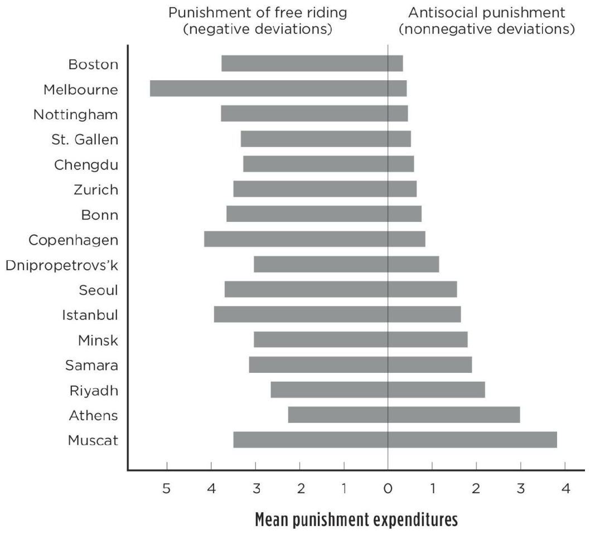
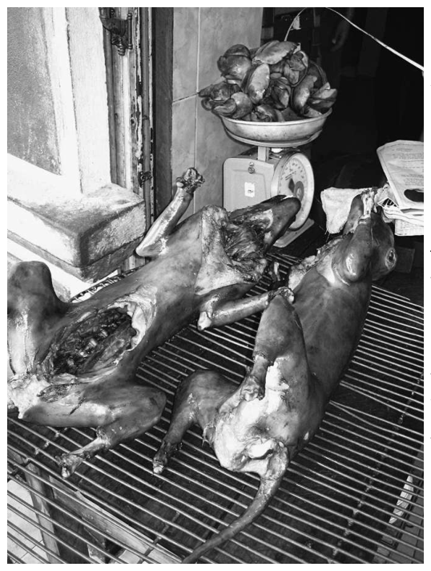

Chương 13 — Đạo đức và làm điều đúng đắn, một khi bạn đã tìm ra điều đó là gì
Mười ba
Đạo đức và việc làm điều đúng đắn, một khi bạn đã
tìm ra điều đó là gì
Hai chương trước đã xem xét những bối cảnh hoàn toàn độc đáo cho một số hành vi của con người nằm trên một phổ liên tục với hành vi ở các loài khác. Giống như một số loài khác, chúng ta tự động tạo ra sự phân đôi Ta/Họ và thiên vị phe Ta—dù chỉ con người mới hợp lý hóa xu hướng đó bằng hệ tư tưởng. Giống như nhiều loài khác, chúng ta có tính phân cấp một cách ngầm ẩn—dù chỉ con người mới xem khoảng cách giữa kẻ có và người không có là một kế hoạch thiêng liêng.
Chương này xem xét một lĩnh vực khác đầy rẫy tính độc đáo của con người, cụ thể là đạo đức. Đối với chúng ta, đạo đức không chỉ là niềm tin vào các chuẩn mực hành vi phù hợp mà còn là niềm tin rằng chúng nên được chia sẻ và truyền bá về mặt văn hóa.
Công việc trong lĩnh vực này bị chi phối bởi một dạng câu hỏi quen thuộc. Khi chúng ta đưa ra quyết định liên quan đến đạo đức, đó chủ yếu là kết quả của lập luận đạo đức hay của trực giác đạo đức? Chúng ta chủ yếu suy nghĩ hay cảm nhận để đi đến quyết định điều gì là đúng?
Điều này làm nảy sinh một câu hỏi liên quan. Đạo đức của con người mới mẻ như các thiết chế văn hóa mà chúng ta đã tạo ra trong những thiên niên kỷ gần đây, hay những mầm mống của nó là một di sản linh trưởng cổ xưa hơn nhiều?
Điều này lại làm nảy sinh thêm nhiều câu hỏi. Điều gì ấn tượng hơn: sự nhất quán và phổ quát trong hành vi đạo đức của con người hay sự biến thiên và mối tương quan của nó với các yếu tố văn hóa và sinh thái?
Cuối cùng, sẽ có những câu hỏi mang tính quy phạm không hề né tránh. Khi nói đến việc ra quyết định đạo đức, khi nào thì “tốt hơn” nếu dựa vào trực giác, khi nào nên dựa vào lập luận? Và khi chúng ta cưỡng lại cám dỗ, đó chủ yếu là một hành động của ý chí hay của ân điển?
Con người đã đối mặt với những vấn đề này từ thời sinh viên mặc áo toga đi học nhập môn triết học. Đương nhiên, những câu hỏi này được khoa học soi rọi.
VỊ THẾ TỐI THƯỢNG CỦA LẬP LUẬN TRONG VIỆC RA QUYẾT ĐỊNH ĐẠO ĐỨC
Một sự thật duy nhất chứng minh hoàn hảo rằng việc ra quyết định đạo đức dựa trên nhận thức và lập luận. Bạn đã bao giờ cầm một cuốn sách giáo khoa luật lên chưa? Chúng dày cộm.
Mọi xã hội đều có các quy tắc về hành vi đạo đức và luân lý được suy luận và đòi hỏi các thao tác logic. Áp dụng các quy tắc đòi hỏi phải tái dựng các kịch bản, hiểu nguyên nhân gần và xa của các sự kiện, và đánh giá mức độ cũng như xác suất hậu quả của hành động. Đánh giá hành vi cá nhân đòi hỏi khả năng đặt mình vào góc nhìn của người khác, Lý thuyết Tâm trí, và phân biệt giữa kết quả và ý định. Hơn nữa, ở nhiều nền văn hóa, việc thực thi quy tắc thường được giao phó cho những người (ví dụ: luật sư, giáo sĩ) đã trải qua quá trình đào tạo lâu dài.
Quay lại chương 7, vị thế tối thượng của lập luận trong việc ra quyết định đạo đức bắt nguồn từ sự phát triển của trẻ em. Sự xuất hiện theo Kohlberg của các giai đoạn phát triển đạo đức ngày càng phức tạp được xây dựng trên sự xuất hiện theo Piaget của các thao tác logic ngày càng phức tạp. Chúng tương đồng về mặt sinh học thần kinh. Lập luận logic và lập luận đạo đức về tính đúng đắn của một quyết định kinh tế hay đạo đức, tương ứng, đều kích hoạt dlPFC (thuộc về nhận thức). Những người mắc chứng rối loạn ám ảnh cưỡng chế bị sa lầy trong cả việc ra quyết định hằng ngày lẫn việc ra quyết định đạo đức, và dlPFC của họ hoạt động điên cuồng trong cả hai trường hợp.1
Tương tự, có sự kích hoạt của ngã ba thái dương – đỉnh (TPJ) trong các nhiệm vụ Lý thuyết Tâm trí, dù chúng mang tính tri giác (ví dụ: hình dung một cảnh phức tạp từ góc nhìn của người xem khác), phi đạo đức (ví dụ: nhớ rõ ai yêu ai trong Giấc mộng đêm hè), hay đạo đức/xã hội (ví dụ: suy luận động cơ đạo đức đằng sau hành động của một người). Hơn nữa, TPJ kích hoạt càng mạnh, người ta càng cân nhắc đến ý định khi đưa ra phán xét đạo đức, đặc biệt là khi có ý định gây hại nhưng không có thiệt hại thực tế nào xảy ra. Quan trọng nhất, khi ức chế TPJ bằng kích thích từ xuyên sọ, các đối tượng nghiên cứu trở nên ít quan tâm đến ý định hơn.2
Các quá trình nhận thức mà chúng ta mang vào lập luận đạo đức không hoàn hảo, ở chỗ có những đường đứt gãy dễ tổn thương, sự mất cân bằng và sự bất đối xứng.3 Ví dụ, gây ra tác hại tệ hơn là để mặc nó xảy ra—với những kết quả tương đương, chúng ta thường phán xét hành vi phạm tội (commission) khắc nghiệt hơn hành vi bỏ mặc (omission) và phải kích hoạt dlPFC nhiều hơn để đánh giá chúng ngang nhau. Điều này hợp lý—khi chúng ta làm một việc, có vô số việc khác chúng ta đã không làm; chẳng trách việc trước nặng nề hơn về mặt tâm lý. Một sự thiên lệch nhận thức khác, như đã thảo luận ở chương 10, là chúng ta giỏi phát hiện các vi phạm khế ước xã hội có hậu quả ác ý hơn là có hậu quả thiện ý (ví dụ: đưa ít hơn so với đưa nhiều hơn lời hứa). Chúng ta cũng tìm kiếm quan hệ nhân quả ráo riết hơn (và đưa ra nhiều quy kết sai hơn) đối với các sự kiện ác ý so với các sự kiện thiện ý.
Điều này được thể hiện trong một nghiên cứu. Kịch bản thứ nhất: Một nhân viên đề xuất một kế hoạch với sếp, nói rằng: “Nếu chúng ta làm điều này, sẽ có lợi nhuận lớn, và trong quá trình đó chúng ta sẽ gây hại cho môi trường.” Ông sếp trả lời: “Tôi không quan tâm đến môi trường. Cứ làm đi.” Kịch bản thứ hai: Bối cảnh y hệt, nhưng lần này sẽ có lợi nhuận lớn và mang lại lợi ích cho môi trường. Ông sếp: “Tôi không quan tâm đến môi trường. Cứ làm đi.” Trong kịch bản thứ nhất, 85 phần trăm đối tượng khẳng định rằng ông sếp đã gây hại cho môi trường để tăng lợi nhuận; tuy nhiên, trong kịch bản thứ hai chỉ có 23 phần trăm nói rằng ông sếp đã giúp ích cho môi trường để tăng lợi nhuận.4
— Được rồi, chúng ta không phải là những cỗ máy lập luận hoàn hảo. Nhưng đó là mục tiêu của chúng ta, và nhiều triết gia đạo đức nhấn mạnh vị thế vượt trội của lập luận, nơi cảm xúc và trực giác, nếu có lỡ xuất hiện, chỉ làm bẩn tấm thảm. Những triết gia như vậy trải dài từ Kant, với công cuộc tìm kiếm một nền toán học của đạo đức, đến triết gia Peter Singer của Đại học Princeton, người than phiền rằng nếu những thứ như tình dục và các chức năng cơ thể có liên quan đến việc làm triết học, thì đã đến lúc treo cựa: “Tốt nhất là nên quên hết mọi phán xét đạo đức cụ thể của chúng ta đi.” Đạo đức được neo giữ trong lý trí.5
Ừ, CHẮC VẬY ĐẤY: THUYẾT TRỰC GIÁC XÃ HỘI
Tuy nhiên có một vấn đề với kết luận này—con người thường chẳng có chút ý niệm nào về lý do tại sao mình lại đưa ra một phán xét nào đó, nhưng họ lại tin sái cổ rằng nó đúng.
Điều này bước thẳng ra từ những đánh giá ngầm ẩn nhanh chóng về Ta và Họ ở chương 11 và những lời biện minh hợp lý hóa hậu nghiệm của chúng ta cho định kiến bản năng. Các nhà khoa học nghiên cứu triết học đạo đức ngày càng nhấn mạnh việc ra quyết định đạo đức mang tính ngầm ẩn, trực giác và neo giữ trong cảm xúc.
Ông vua của trường phái “trực giác xã hội” này là Jonathan Haidt, người mà chúng ta đã gặp trước đây.6 Haidt xem các quyết định đạo đức chủ yếu dựa trên trực giác và tin rằng lập luận là thứ chúng ta dùng sau đó để thuyết phục mọi người, bao gồm cả chính mình, rằng chúng ta đang nói điều hợp lý. Theo một câu nói rất đắt của Haidt, “suy nghĩ đạo đức là để hành động xã hội,” và tính xã hội luôn có thành phần cảm xúc.
Bằng chứng cho trường phái trực giác xã hội rất phong phú:
Khi suy ngẫm về các quyết định đạo đức, chúng ta không chỉ kích hoạt vùng dlPFC đầy chất mọt sách.7 Còn có sự kích hoạt của dàn diễn viên cảm xúc quen thuộc—hạch hạnh nhân, vmPFC và vùng vỏ não trán ổ mắt liên quan, vỏ não thùy đảo, vỏ não đai trước. Các loại vi phạm đạo đức khác nhau ưu tiên kích hoạt các tập hợp con khác nhau của những vùng này. Ví dụ, những tình huống tiến thoái lưỡng nan về đạo đức gợi lên lòng thương hại ưu tiên kích hoạt thùy đảo; những tình huống gợi lên sự phẫn nộ kích hoạt vỏ não trán ổ mắt. Những tình huống gây ra xung đột dữ dội ưu tiên kích hoạt vỏ não đai trước. Cuối cùng, đối với những hành vi được đánh giá là sai trái về mặt đạo đức ngang nhau, những hành vi liên quan đến vi phạm phi tình dục (ví dụ: ăn cắp của anh chị em ruột) kích hoạt hạch hạnh nhân, trong khi những hành vi liên quan đến vi phạm tình dục (ví dụ: quan hệ tình dục với anh chị em ruột) còn kích hoạt cả thùy đảo.*
Hơn nữa, khi sự kích hoạt đó đủ mạnh, chúng ta cũng kích hoạt hệ thần kinh giao cảm và cảm thấy hưng phấn—và chúng ta biết những tác động ngoại biên đó phản hồi ngược lại và ảnh hưởng đến hành vi như thế nào. Khi chúng ta đối mặt với một lựa chọn đạo đức, dlPFC không phân xử trong sự tĩnh lặng trầm tư. Mặt nước cuộn sóng ở bên dưới.
Mô hình kích hoạt ở những vùng này dự đoán các quyết định đạo đức tốt hơn hồ sơ của dlPFC. Và điều này khớp với hành vi—con người trừng phạt tương ứng với mức độ họ cảm thấy tức giận trước việc ai đó hành động phi đạo đức.8
Con người có xu hướng phản ứng đạo đức tức thì; hơn nữa, khi các đối tượng chuyển từ việc đánh giá các yếu tố phi đạo đức của hành vi sang các yếu tố đạo đức, họ đưa ra đánh giá nhanh hơn, hoàn toàn trái ngược với việc ra quyết định đạo đức là một quá trình nhận thức nghiền ngẫm. Ấn tượng nhất là khi đối mặt với một tình huống khó xử về đạo đức, sự kích hoạt ở hạch hạnh nhân, vmPFC và thùy đảo thường đi trước sự kích hoạt của dlPFC.9
Tổn thương ở các vùng não trực giác này làm cho các phán xét đạo đức trở nên thực dụng hơn, thậm chí máu lạnh hơn. Hãy nhớ lại từ chương 10 cách những người bị tổn thương vùng vmPFC (cảm xúc) sẵn sàng ủng hộ việc hy sinh một người thân để cứu năm người lạ, điều mà các đối tượng đối chứng không bao giờ làm.
Điều nói lên nhiều nhất là khi chúng ta có những quan điểm đạo đức mạnh mẽ nhưng không thể giải thích tại sao, điều mà Haidt gọi là “câm lặng đạo đức” (moral dumbfounding)—theo sau là sự hợp lý hóa hậu nghiệm vụng về.10 Hơn nữa, những quyết định đạo đức như vậy có thể khác biệt rõ rệt trong các hoàn cảnh cảm xúc hoặc bản năng khác nhau, tạo ra những lời hợp lý hóa rất khác nhau. Hãy nhớ lại từ chương trước việc con người trở nên bảo thủ hơn trong các phán xét xã hội khi họ ngửi thấy mùi hôi thối hoặc ngồi ở một chiếc bàn bẩn thỉu. Và rồi có phát hiện động trời này—việc biết quan điểm của một thẩm phán về Plato, Nietzsche, Rawls, và bất kỳ triết gia nào khác mà tôi vừa tra cứu tên mang lại cho bạn ít khả năng dự đoán về các phán quyết tư pháp của bà ấy hơn là việc biết liệu bà ấy có đang đói hay không.
Nguồn gốc trực giác xã hội của đạo đức được củng cố thêm bởi bằng chứng về phán xét đạo đức ở hai nhóm cá thể có năng lực lập luận đạo đức hạn chế.
LẠI NÓI VỀ TRẺ SƠ SINH VÀ ĐỘNG VẬT
Cũng giống như trẻ sơ sinh thể hiện những mầm mống của tư duy phân cấp và Ta/Họ, chúng cũng sở hữu những viên gạch nền tảng của lập luận đạo đức. Trước hết, trẻ sơ sinh có sự thiên lệch liên quan đến hành vi phạm tội (commission) so với hành vi bỏ mặc (omission). Trong một nghiên cứu khéo léo, trẻ sáu tháng tuổi xem một cảnh có hai vật giống nhau, một màu xanh dương và một màu đỏ; lặp đi lặp lại, cảnh đó cho thấy một người chọn vật màu xanh dương. Rồi một lần, vật màu đỏ được chọn. Đứa trẻ trở nên hứng thú, nhìn lâu hơn, thở nhanh hơn, cho thấy điều này có vẻ sai lệch. Bây giờ, cảnh đó cho thấy hai vật giống nhau, một màu xanh dương, một màu khác. Trong mỗi lần lặp lại của cảnh, một người chọn vật không phải màu xanh dương (màu sắc của nó thay đổi sau mỗi lần lặp). Đột nhiên, vật màu xanh dương được chọn. Đứa trẻ không đặc biệt hứng thú. “Anh ta luôn chọn cái màu xanh” dễ hiểu hơn “Anh ta không bao giờ chọn cái màu xanh.” Hành vi làm (commission) nặng ký hơn.11
Trẻ sơ sinh và trẻ mới biết đi cũng có những dấu hiệu của ý thức công lý, như được chỉ ra bởi Kiley Hamlin thuộc Đại học British Columbia, và Paul Bloom cùng Karen Wynn thuộc Đại học Yale. Trẻ từ sáu đến mười hai tháng tuổi xem một hình tròn di chuyển lên đồi. Một hình tam giác tốt bụng giúp đẩy nó lên. Một hình vuông xấu tính chặn nó lại. Sau đó, trẻ có thể với lấy một hình tam giác hoặc một hình vuông. Chúng chọn hình tam giác.* Trẻ sơ sinh thích những thực thể tốt bụng hay xa lánh những thực thể xấu tính? Cả hai. Hình tam giác tốt bụng được ưa thích hơn hình dạng trung tính, và hình dạng trung tính lại được ưa thích hơn hình vuông xấu tính.
Những đứa trẻ sơ sinh như vậy ủng hộ việc trừng phạt các hành vi xấu. Một đứa trẻ xem các con rối, một tốt, một xấu (chia sẻ so với không chia sẻ). Đứa trẻ sau đó được đưa ra các con rối, mỗi con ngồi trên một đống kẹo. Con nào nên mất một viên kẹo? Con rối xấu. Con nào nên được thêm một viên? Con rối tốt.
Đáng kinh ngạc là trẻ mới biết đi thậm chí còn đánh giá sự trừng phạt thứ cấp. Các con rối tốt và xấu sau đó tương tác với hai con rối bổ sung khác, có thể tốt hoặc xấu. Và trẻ thích con nào trong số những con rối lớp thứ hai đó? Những con đối xử tốt với con rối tốt và những con trừng phạt con rối xấu tính.
Các loài linh trưởng khác cũng cho thấy những khởi đầu của phán xét đạo đức. Mọi chuyện bắt đầu với một bài báo tuyệt vời năm 2003 của Frans de Waal và Sarah Brosnan.12
Khỉ mũ (capuchin) được huấn luyện trong một nhiệm vụ: Một người đưa cho chúng một vật nhỏ hơi thú vị—một viên sỏi. Người đó sau đó chìa tay ngửa lòng bàn tay ra, một cử chỉ xin xỏ của khỉ mũ. Nếu con khỉ đặt viên sỏi vào tay người đó, sẽ có phần thưởng thức ăn. Nói cách khác, lũ vật đã học cách mua thức ăn.
Bây giờ có hai con khỉ mũ, cạnh nhau. Mỗi con nhận một viên sỏi. Mỗi con đưa nó cho người. Mỗi con nhận được một quả nho, rất đáng giá.
Bây giờ thay đổi mọi thứ. Cả hai con khỉ đều trả viên sỏi của mình. Khỉ 1 nhận một quả nho. Nhưng khỉ 2 nhận một ít dưa chuột, thứ dở tệ so với nho—khỉ mũ thích nho hơn dưa chuột 90 phần trăm số lần. Khỉ 2 đã bị trả thiếu. Và khỉ 2 sau đó thường ném miếng dưa chuột vào người hoặc đập phá xung quanh trong sự thất vọng. Nhất quán nhất là chúng sẽ không đưa viên sỏi vào lần tiếp theo. Như tiêu đề của bài báo trên tạp chí Nature, “Khỉ từ chối sự trả công bất bình đẳng.”
Phản ứng này kể từ đó đã được chứng minh ở nhiều loài khỉ macaque, quạ, quạ đen và chó (nơi “công việc” của chó là bắt tay).*13
Công trình tiếp theo của Brosnan, de Waal và những người khác đã làm rõ thêm hiện tượng này:14
Một lời chỉ trích đối với nghiên cứu ban đầu là có lẽ khỉ mũ từ chối làm việc vì dưa chuột bởi vì nho đang nằm trong tầm mắt, bất kể con kia có được trả công bằng nho hay không. Nhưng không—hiện tượng này đòi hỏi sự trả công bất công. Cả hai con vật đều đang nhận nho, rồi một con bị chuyển sang dưa chuột. Điều gì là mấu chốt—việc con kia vẫn đang nhận được nho, hay việc tôi không còn được nữa? Là vế đầu—nếu thực hiện nghiên cứu với một con khỉ đơn lẻ, việc chuyển từ nho sang dưa chuột sẽ không gợi ra sự từ chối. Cũng không từ chối nếu cả hai con khỉ đều nhận dưa chuột. Xuyên suốt các loài khác nhau, con đực có khả năng từ chối “mức lương thấp hơn” cao hơn con cái; con vật thống trị có khả năng từ chối cao hơn con phục tùng. Vấn đề nằm ở công việc—cho một con khỉ quả nho miễn phí, con kia miếng dưa chuột miễn phí, thì con sau không hề nổi cáu.
Hai con vật ở càng gần nhau, con nhận dưa chuột càng có khả năng đình công. Cuối cùng, việc từ chối trả công bất công không thấy ở các loài sống đơn độc (ví dụ: đười ươi) hoặc có sự hợp tác xã hội tối thiểu (ví dụ: khỉ cú).
Được rồi, rất ấn tượng—các loài xã hội khác cho thấy dấu hiệu của ý thức công lý, phản ứng tiêu cực với phần thưởng bất bình đẳng. Nhưng điều này còn cách rất xa việc bồi thẩm đoàn trao tiền cho các nguyên đơn bị chủ lao động gây hại. Thay vào đó, nó là tư lợi—“Điều này không công bằng; tôi đang bị chơi khăm.”
Thế còn bằng chứng về ý thức công bằng trong cách đối xử với một cá thể khác thì sao? Hai nghiên cứu đã xem xét điều này trong một phiên bản Trò chơi Tối hậu thư dành cho tinh tinh. Hãy nhớ lại phiên bản của con người—trong các vòng lặp lại, người chơi 1 trong một cặp quyết định số tiền được chia giữa hai người như thế nào. Người chơi 2 không có quyền lực trong việc ra quyết định nhưng, nếu không hài lòng với sự phân chia, có thể từ chối, và không ai nhận được đồng nào. Nói cách khác, người chơi 2 có thể từ bỏ phần thưởng tức thì để trừng phạt người chơi 1 ích kỷ. Như chúng ta đã thấy ở chương 10, Người chơi 2 có xu hướng chấp nhận tỷ lệ chia 60:40.
Trong phiên bản tinh tinh, tinh tinh 1, người đề xuất, có hai thẻ bài. Một thẻ cho biết mỗi con tinh tinh nhận hai quả nho. Thẻ kia cho biết người đề xuất nhận ba quả nho, bạn đồng hành chỉ nhận một. Người đề xuất chọn một thẻ và đưa cho tinh tinh 2, con này sau đó quyết định có đưa thẻ đó cho người phát nho hay không. Nói cách khác, nếu tinh tinh 2 nghĩ tinh tinh 1 đang bất công, không ai được ăn nho.
Trong một nghiên cứu như vậy, Michael Tomasello (một nhà phê bình thường xuyên của de Waal—hãy chờ xem) tại Viện Max Planck ở Đức, không tìm thấy bằng chứng nào về sự công bằng của tinh tinh—người đề xuất luôn chọn, và bạn đồng hành luôn chấp nhận các phân chia bất công.15 De Waal và Brosnan đã thực hiện nghiên cứu trong các điều kiện hợp lý hơn về mặt tập tính học và báo cáo điều khác biệt: tinh tinh đề xuất có xu hướng hướng tới các phân chia công bằng, nhưng nếu chúng có thể đưa thẻ trực tiếp cho người (tước đoạt quyền phủ quyết của tinh tinh 2), chúng sẽ ưu tiên các phân chia bất công. Vì vậy tinh tinh sẽ chọn các phân chia công bằng hơn—nhưng chỉ khi có bất lợi cho việc bất công.
Đôi khi các loài linh trưởng khác tỏ ra công bằng khi điều đó không gây tốn kém gì cho bản thân chúng. Quay lại với khỉ mũ. Khỉ 1 chọn xem cả nó và con kia đều nhận kẹo dẻo (marshmallow) hay là kẹo dẻo cho nó và cần tây dở tệ cho con kia. Khỉ có xu hướng chọn kẹo dẻo cho con kia.* “Sở thích quan tâm đến kẻ khác” tương tự cũng được thể hiện ở khỉ marmoset, nơi cá thể đầu tiên không nhận được gì và chỉ đơn giản chọn xem con kia có được ăn một con dế hay không (đáng chú ý là một số nghiên cứu đã không tìm thấy sở thích quan tâm đến kẻ khác ở tinh tinh).16
Bằng chứng thực sự thú vị cho ý thức công lý ở loài không phải người đến từ một nghiên cứu phụ nhỏ trong bài báo của Brosnan/de Waal. Quay lại với hai con khỉ nhận dưa chuột cho công việc. Đột nhiên một con được chuyển sang nho. Như chúng ta đã thấy, con vẫn nhận dưa chuột từ chối làm việc. Hấp dẫn thay, ông trùm nho cũng thường từ chối theo.
Đây là cái gì vậy? Sự đoàn kết? “Tôi không phải kẻ phá đình công”? Tư lợi, nhưng với tầm nhìn xa bất thường về những hậu quả có thể xảy ra từ sự oán giận của nạn nhân dưa chuột? Cào nhẹ một con khỉ mũ vị tha thì một con giả tạo chảy máu? Nói cách khác, tất cả những câu hỏi được đặt ra bởi lòng vị tha của con người.
Xét đến năng lực lập luận tương đối hạn chế của loài khỉ, những phát hiện này ủng hộ tầm quan trọng của thuyết trực giác xã hội. De Waal nhận thấy những hàm ý thậm chí còn sâu sắc hơn—nguồn gốc của đạo đức con người cổ xưa hơn các thiết chế văn hóa của chúng ta, cổ xưa hơn luật pháp và các bài thuyết giáo của chúng ta. Thay vì đạo đức con người mang tính siêu việt về mặt tâm linh (mời các vị thần bước ra sân khấu từ cánh gà phải), nó vượt qua ranh giới loài của chúng ta.17
ÔNG SPOCK VÀ JOSEPH STALIN
Nhiều triết gia đạo đức tin rằng phán xét đạo đức không chỉ được xây dựng trên lập luận mà còn nên như vậy. Điều này hiển nhiên đối với người hâm mộ Ông Spock, vì thành phần cảm xúc của thuyết trực giác đạo đức chỉ đưa vào sự ủy mị, tư lợi và các thiên kiến cục bộ. Nhưng một phát hiện đáng chú ý đã phản bác điều này.
Người thân là đặc biệt. Chương 10 chứng thực điều đó. Bất kỳ sinh vật xã hội nào cũng sẽ nói với bạn như vậy. Joseph Stalin đã nghĩ như vậy về việc Pavlik Morozov tố giác cha mình. Hầu hết các tòa án Mỹ cũng vậy, nơi có sự kháng cự trên thực tế hoặc trên danh nghĩa pháp lý đối với việc bắt ai đó làm chứng chống lại cha mẹ hoặc con cái của chính họ. Người thân là đặc biệt. Nhưng không phải đối với những người thiếu trực giác xã hội. Như đã lưu ý, những người bị tổn thương vmPFC đưa ra các quyết định đạo đức cực kỳ thực tế, vô cảm. Và trong quá trình đó, họ làm một điều mà tất cả mọi người, từ nấm men đơn bào đến Bác Joe đến Quy tắc Chứng cứ Hình sự Texas đều coi là đáng ngờ về mặt đạo đức: họ ủng hộ việc gây hại cho người thân sẵn sàng ngang với người lạ trong kịch bản “Có ổn không nếu hy sinh một người để cứu năm người?”.18
Cảm xúc và trực giác xã hội không phải là thứ bùn nhầy nguyên thủy làm kẹt cứng chuyên môn lập luận đạo đức của con người. Thay vào đó, chúng neo giữ một số phán xét đạo đức ít ỏi mà hầu hết con người đều đồng thuận.
BỐI CẢNH
Vậy là trực giác xã hội có thể đóng những vai trò to lớn, hữu ích trong việc ra quyết định đạo đức. Liệu bây giờ chúng ta có nên tranh luận xem lập luận hay trực giác quan trọng hơn không? Điều này thật ngớ ngẩn, ít nhất là vì có sự chồng chéo đáng kể giữa hai thứ. Hãy xem xét, ví dụ, những người biểu tình phong tỏa một thủ đô để nhấn mạnh sự bất bình đẳng thu nhập. Điều này có thể được đóng khung như lập luận theo Kohlberg của những người ở giai đoạn hậu quy ước. Nhưng nó cũng có thể được đóng khung theo kiểu Haidt một cách trực giác xã hội—đây là những người cộng hưởng với trực giác đạo đức về sự công bằng nhiều hơn là với sự tôn trọng quyền lực.
Thú vị hơn việc cãi vã về tầm quan trọng tương đối của lập luận và trực giác là hai câu hỏi liên quan: Hoàn cảnh nào thiên về việc nhấn mạnh cái này hơn cái kia? Liệu những sự nhấn mạnh khác nhau đó có thể tạo ra những quyết định khác nhau không?
Như chúng ta đã thấy, nghiên cứu sinh lúc bấy giờ là Josh Greene và các đồng nghiệp đã giúp khởi động ngành “đạo đức học thần kinh” (neuroethics) bằng cách khám phá những câu hỏi này qua đứa con cưng của triết học “Mục đích có biện minh cho phương tiện không?”, cụ thể là bài toán xe điện mất phanh. Một chiếc xe điện bị hỏng phanh, đang lao xuống đường ray và sẽ đâm chết năm người. Có ổn không nếu làm điều gì đó cứu năm người nhưng lại giết chết một người khác trong quá trình đó?
Con người đã suy ngẫm về điều này từ thời Aristotle đi chuyến xe điện đầu tiên của mình;* Greene và cộng sự đã bổ sung thêm khoa học thần kinh. Các đối tượng được chụp ảnh thần kinh trong khi suy ngẫm về đạo đức xe điện. Điều cốt yếu là họ xem xét hai kịch bản. Kịch bản 1: Chiếc xe điện đang lao tới; năm người coi như xong đời. Bạn có kéo một cần gạt chuyển hướng xe điện sang một đường ray khác, nơi nó sẽ đâm chết một người (kịch bản gốc) không? Kịch bản 2: Hoàn cảnh tương tự. Bạn có đẩy người đó xuống đường ray để chặn chiếc xe điện lại không?19
Đến giờ tôi cá là độc giả có thể đoán được vùng não nào kích hoạt trong từng hoàn cảnh. Cân nhắc việc kéo cần gạt, và hoạt động của dlPFC chiếm ưu thế, hồ sơ lý trí, tách biệt của lập luận đạo đức. Cân nhắc việc đẩy người đó vào chỗ chết, và đó là vmPFC (và hạch hạnh nhân), hồ sơ bản năng của trực giác đạo đức.
Bạn có kéo cần gạt không? Nhất quán là 60 đến 70 phần trăm số người, với dlPFC của họ hoạt động hết công suất, nói có với giải pháp vị lợi này—giết một để cứu năm. Bạn có tự tay đẩy người đó không? Chỉ 30 phần trăm sẵn sàng; sự kích hoạt của vmPFC và/hoặc hạch hạnh nhân càng mạnh, họ càng có khả năng từ chối.* Điều này cực kỳ quan trọng—một biến số tương đối nhỏ quyết định việc con người nhấn mạnh lập luận đạo đức hay trực giác, và họ huy động các mạch não khác nhau trong quá trình đó, tạo ra những quyết định khác nhau một trời một vực. Greene đã khám phá điều này sâu hơn.
Liệu con người có kháng cự sự đánh đổi vị lợi giết một cứu năm trong kịch bản đẩy người vì thực tế bản năng của việc thực sự chạm vào người mà họ đẩy vào chỗ chết không? Công trình của Greene gợi ý là không—nếu thay vì đẩy bằng tay, bạn đẩy bằng một cây sào, mọi người vẫn kháng cự. Có điều gì đó về lực tác động cá nhân liên quan đã thúc đẩy sự kháng cự.
Liệu con người có sẵn sàng trong kịch bản kéo cần gạt vì nạn nhân ở xa, thay vì ngay trước mặt họ không? Có lẽ là không—mọi người vẫn sẵn sàng như vậy ngay cả khi cần gạt nằm ngay cạnh người sẽ chết.
Greene gợi ý rằng trực giác về tính cố ý (intentionality) là chìa khóa. Trong kịch bản kéo cần gạt, năm người được cứu vì chiếc xe điện đã bị chuyển hướng sang đường ray khác; cái chết của cá nhân kia là một tác dụng phụ và năm người vẫn sẽ được cứu nếu người đó không đứng trên đường ray. Ngược lại, trong kịch bản đẩy người, năm người được cứu bởi vì người đó bị giết, và tính cố ý này mang lại cảm giác sai trái về mặt trực giác. Làm bằng chứng, Greene đưa cho các đối tượng một kịch bản khác: Chiếc xe điện đang lao tới, và bạn đang lao tới gạt một công tắc sẽ làm nó dừng lại. Có ổn không nếu làm điều này khi bạn biết rằng trong quá trình lao tới công tắc, bạn phải đẩy một người ra khỏi đường, khiến họ ngã xuống đất và chết? Khoảng 80 phần trăm số người nói có. Vẫn là đẩy người đó, vẫn là khoảng cách gần như vậy, nhưng được thực hiện một cách vô ý, như một tác dụng phụ. Người đó không bị giết như một phương tiện để cứu năm người. Điều đó có vẻ ổn hơn nhiều.
Bây giờ là một sự phức tạp. Trong kịch bản “vòng lặp”, bạn kéo một cần gạt chuyển hướng xe điện sang đường ray khác. Nhưng—ôi không!—đó chỉ là một vòng lặp; nó nhập trở lại vào đường ray ban đầu. Chiếc xe điện vẫn sẽ giết năm người—ngoại trừ việc có một người trên vòng lặp phụ sẽ bị giết, làm dừng chiếc xe điện. Đây là một kịch bản cố ý y hệt như việc đẩy bằng tay—chuyển hướng sang đường ray khác là chưa đủ; người đó phải bị giết. Theo mọi logic thì chỉ có khoảng
30 phần trăm số người nên đồng tình, nhưng thay vào đó tỷ lệ lại nằm trong khoảng 60 đến 70 phần trăm.
Greene kết luận (từ kịch bản này và các kịch bản bổ sung giống vòng lặp) rằng vũ trụ trực giác rất cục bộ. Cố ý giết ai đó như một phương tiện để cứu năm người mang lại cảm giác sai trái về mặt trực giác, nhưng trực giác đó mạnh nhất khi việc giết chóc xảy ra ngay tại đây, ngay lúc này; làm điều đó trong những chuỗi cố ý phức tạp hơn không mang lại cảm giác tệ bằng. Điều này không phải do giới hạn nhận thức—không phải các đối tượng không nhận ra sự cần thiết của việc giết người trong kịch bản vòng lặp. Chỉ là nó không mang lại cảm giác giống nhau. Nói cách khác, trực giác chiết khấu rất mạnh qua không gian và thời gian. Chính xác là sự thiển cận về nhân quả mà bạn mong đợi từ một hệ thống não bộ hoạt động nhanh chóng và tự động. Đây là cùng một kiểu thiển cận khiến tội lỗi do hành động (commission) cảm thấy tệ hơn tội lỗi do bỏ mặc (omission).
Do đó, những nghiên cứu này gợi ý rằng khi sự hy sinh một người đòi hỏi các hành động chủ động, cố ý và cục bộ, mạch não trực giác được huy động nhiều hơn, và mục đích không biện minh cho phương tiện. Và trong những hoàn cảnh mà tác hại là vô ý hoặc tính cố ý diễn ra ở một khoảng cách tâm lý, mạch thần kinh khác chiếm ưu thế, tạo ra kết luận trái ngược về đạo đức của mục đích và phương tiện.
Những nghiên cứu về xe điện học (trolleyology) này nêu lên một điểm lớn hơn, đó là việc ra quyết định đạo đức có thể phụ thuộc bối cảnh một cách điên rồ.20 Thường thì điều cốt yếu mà sự thay đổi bối cảnh làm là thay đổi tính cục bộ của đạo đức trực giác ở một người, như được tóm tắt bởi Dan Ariely thuộc Đại học Duke trong cuốn sách tuyệt vời của ông Phi lý trí (Predictably Irrational). Để tiền quanh khu vực làm việc chung và không ai lấy; ăn cắp tiền là không ổn. Để vài lon Coca và chúng bị lấy sạch; khoảng cách một bước so với số tiền liên quan làm cùn mòn trực giác về sự sai trái của việc ăn cắp, khiến việc bắt đầu hợp lý hóa trở nên dễ dàng hơn (ví dụ: chắc ai đó để ra đấy cho mọi người lấy).
Tác động của sự gần gũi lên trực giác đạo đức được thể hiện trong một thí nghiệm tư tưởng của Peter Singer.21 Bạn đang đi bộ bên một con sông ở quê nhà. Bạn thấy một đứa trẻ bị rơi xuống nước. Hầu hết mọi người đều cảm thấy có nghĩa vụ đạo đức phải nhảy xuống cứu đứa trẻ, ngay cả khi nước làm hỏng bộ vest 500 đô la của họ. Mặt khác, một người bạn ở Somalia gọi điện và kể cho bạn nghe về một đứa trẻ nghèo ở đó sẽ chết nếu không có 500 đô la tiền chăm sóc y tế. Bạn có thể gửi tiền không? Thường là không. Tính cục bộ và sự chiết khấu đạo đức theo khoảng cách rất rõ ràng—đứa trẻ gặp nguy hiểm ở quê nhà bạn là một phần của Ta hơn nhiều so với đứa trẻ đang hấp hối ở nơi xa xôi này. Và đây là một cốt lõi trực giác chứ không phải nhận thức—nếu bạn đang đi dạo ở Somalia và thấy một đứa trẻ rơi xuống sông, bạn sẽ có nhiều khả năng nhảy xuống và hy sinh bộ vest hơn là gửi 500 đô la cho người bạn gọi điện kia. Việc ai đó ở ngay đó, bằng xương bằng thịt, trước mắt chúng ta là một mồi nhử ngầm ẩn mạnh mẽ rằng họ là một phần của Ta.
Sự phụ thuộc bối cảnh của đạo đức cũng có thể xoay quanh ngôn ngữ, như đã lưu ý ở chương 3.22 Hãy nhớ lại, ví dụ, con người sử dụng các quy tắc khác nhau về đạo đức của sự hợp tác nếu bạn gọi cùng một trò chơi kinh tế là “trò chơi Phố Wall” hay “trò chơi cộng đồng.” Đóng khung một loại thuốc thử nghiệm là có “tỷ lệ tử vong 5 phần trăm” so với “tỷ lệ sống sót 95 phần trăm” tạo ra những quyết định khác nhau về đạo đức khi sử dụng nó.
Việc đóng khung cũng chạm vào chủ đề con người có nhiều bản sắc, thuộc về nhiều nhóm Ta và hệ thống phân cấp. Điều này được thể hiện trong một bài báo cực kỳ thú vị trên tạp chí Nature năm 2014 của Alain Cohn và các đồng nghiệp tại Đại học Zurich.23 Các đối tượng, làm việc cho một ngân hàng quốc tế (giấu tên), chơi một trò chơi tung đồng xu có phần thưởng tài chính khi đoán đúng kết quả. Điều cốt yếu là thiết kế của trò chơi cho phép các đối tượng gian lận ở nhiều thời điểm khác nhau (và cho phép các nhà nghiên cứu phát hiện ra sự gian lận).
Trong một phiên bản, các đối tượng trước tiên hoàn thành một bảng câu hỏi chứa đầy những câu hỏi tầm thường về cuộc sống hằng ngày của họ (ví dụ: “Bạn xem tivi bao nhiêu giờ mỗi tuần?”). Điều này tạo ra một mức độ gian lận nền thấp.
Sau đó, trong phiên bản thử nghiệm, bảng câu hỏi nói về công việc ngân hàng của họ. Những câu hỏi như thế này mồi cho các đối tượng suy nghĩ ngầm nhiều hơn về ngành ngân hàng (ví dụ: trong một nhiệm vụ điền từ, họ có nhiều khả năng hoàn thành “__oker” bằng “broker” [người môi giới] hơn là “smoker” [người hút thuốc]).
Vì vậy các đối tượng đang nghĩ về bản sắc ngân hàng của họ. Và khi họ làm vậy, tỷ lệ gian lận tăng 20 phần trăm. Việc mồi cho những người làm các ngành nghề khác (ví dụ: sản xuất) nghĩ về công việc của họ, hoặc về thế giới ngân hàng, không làm tăng sự gian lận. Những nhân viên ngân hàng này mang trong đầu hai bộ quy tắc đạo đức khác nhau liên quan đến việc gian lận (ngân hàng và phi ngân hàng), và sự gợi ý vô thức đã đưa bộ quy tắc này hoặc bộ quy tắc kia lên hàng đầu.* Hãy hiểu chính mình. Đặc biệt là trong những bối cảnh khác nhau.
“Nhưng Hoàn Cảnh Này Khác”
Sự phụ thuộc bối cảnh của đạo đức rất quan trọng trong một lĩnh vực bổ sung. Thật là một cơn ác mộng đối với một người, với chứng thái nhân cách không hối hận, tin rằng việc ăn cắp, giết chóc, cưỡng hiếp và cướp bóc là ổn. Nhưng phần lớn hơn nhiều những hành vi tồi tệ nhất của nhân loại là do một kiểu người khác gây ra, cụ thể là hầu hết phần còn lại của chúng ta, những người sẽ nói rằng tất nhiên làm X là sai . . . nhưng đây là lý do tại sao những hoàn cảnh đặc biệt này khiến tôi trở thành một ngoại lệ ngay lúc này.
Chúng ta sử dụng các mạch não khác nhau khi suy ngẫm về những sai lầm đạo đức của chính mình (kích hoạt mạnh vmPFC) so với sai lầm của người khác (nhiều thùy đảo và dlPFC hơn).24 Và chúng ta nhất quán đưa ra những phán xét khác nhau, có nhiều khả năng miễn trừ cho bản thân hơn là người khác khỏi sự lên án đạo đức. Tại sao? Một phần đơn giản chỉ là phục vụ bản thân; đôi khi một kẻ đạo đức giả chảy máu là vì bạn đã cào trúng một kẻ đạo đức giả. Sự khác biệt cũng có thể phản ánh những cảm xúc khác nhau liên quan khi chúng ta phân tích hành động của chính mình so với hành động của người khác. Xem xét sai lầm đạo đức của người khác có thể gợi lên sự tức giận và phẫn nộ, trong khi chiến thắng đạo đức của họ thúc đẩy sự noi gương và cảm hứng. Ngược lại, xem xét sai lầm đạo đức của chính mình gợi lên sự xấu hổ và tội lỗi, trong khi chiến thắng của chúng ta khơi dậy lòng tự hào.
Các khía cạnh cảm xúc của việc nương tay với bản thân được thể hiện khi căng thẳng khiến chúng ta trở nên như vậy hơn.25 Khi bị gây căng thẳng trong thí nghiệm, các đối tượng đưa ra những phán xét vị kỷ hơn, hợp lý hóa hơn liên quan đến các tình huống tiến thoái lưỡng nan về đạo đức mang tính cảm xúc và ít có khả năng đưa ra phán xét vị lợi hơn—nhưng chỉ khi phán xét đó liên quan đến một vấn đề đạo đức cá nhân. Hơn nữa, phản ứng glucocorticoid đối với tác nhân gây căng thẳng càng lớn, điều này càng đúng.
Việc nương tay với bản thân cũng phản ánh một sự thật nhận thức cốt yếu: chúng ta đánh giá bản thân qua động cơ bên trong và đánh giá mọi người khác qua hành động bên ngoài.26 Và do đó, khi xem xét hành vi sai trái của chính mình, chúng ta có nhiều khả năng tiếp cận thông tin tình huống giảm nhẹ hơn. Điều này bước thẳng ra từ Ta/Họ—khi phe Họ làm điều gì đó sai trái, đó là vì họ đơn giản là thối nát; khi phe Ta làm điều đó, đó là vì một hoàn cảnh giảm nhẹ, và “Tôi” là phe Ta trung tâm nhất hiện có, đi kèm với sự thấu hiểu sâu sắc nhất về trạng thái bên trong. Do đó, ở cấp độ nhận thức này, không có sự mâu thuẫn hay đạo đức giả nào cả, và chúng ta có thể dễ dàng nhận thấy một sai lầm được giảm nhẹ bởi động cơ bên trong trong trường hợp hành vi sai trái của bất kỳ ai. Chỉ là dễ biết những động cơ đó hơn khi chúng ta là thủ phạm.
Những hậu quả bất lợi của điều này rất rộng và sâu. Hơn nữa, lực kéo hướng tới việc phán xét bản thân ít khắc nghiệt hơn người khác dễ dàng kháng cự lại lý tính của sự răn đe. Như Ariely viết trong cuốn sách của mình, “Nhìn chung sự gian lận không bị giới hạn bởi rủi ro; nó bị giới hạn bởi khả năng tự hợp lý hóa sự gian lận với chính mình.”
Bối Cảnh Văn Hóa
Vậy là con người đưa ra những phán xét đạo đức khác nhau về cùng một hoàn cảnh tùy thuộc vào việc nó liên quan đến họ hay ai khác, bản sắc nào của họ đã được mồi, ngôn ngữ được sử dụng, tính cố ý bị đẩy lùi bao nhiêu bước, và thậm chí mức độ hormone căng thẳng, độ no của dạ dày, hay mùi hôi của môi trường xung quanh. Sau chương 9, không có gì ngạc nhiên khi việc ra quyết định đạo đức cũng có thể thay đổi đáng kể theo văn hóa. Con bò thiêng của nền văn hóa này là bữa ăn của nền văn hóa khác, và sự chênh lệch này có thể gây đau đớn tột cùng.
Khi nghĩ về sự khác biệt đa văn hóa trong đạo đức, các vấn đề cốt yếu là những phổ quát nào của phán xét đạo đức tồn tại và liệu những phổ quát hay những khác biệt thú vị và quan trọng hơn.
Chương 9 đã lưu ý một số lập trường đạo đức hầu như phổ quát, dù trên thực tế hay trên danh nghĩa pháp lý. Những điều này bao gồm việc lên án ít nhất một số hình thức giết người và trộm cắp. Ồ, và một số hình thức thực hành tình dục.
Rộng hơn, có sự phổ quát gần như tuyệt đối của Quy tắc Vàng (với các nền văn hóa khác nhau ở chỗ nó được đóng khung là “Chỉ làm những điều bạn muốn người khác làm cho mình” hay “Đừng làm những điều bạn không muốn người khác làm cho mình”). Giữa sức mạnh từ sự đơn giản của nó, Quy tắc Vàng không bao hàm việc mọi người khác nhau về những gì họ muốn/không muốn người khác làm cho mình; chúng ta đã bước vào địa hạt phức tạp khi có thể hiểu được một cuộc trao đổi mà kẻ khổ dâm nói, “Hãy đánh tôi đi,” và kẻ bạo dâm trả lời một cách tàn nhẫn, “Không.”
Lời chỉ trích này được khắc phục bằng việc sử dụng một đồng tiền chung khái quát hơn về sự có đi có lại, nơi chúng ta được khuyên nên dành sự quan tâm và tính chính đáng cho các nhu cầu và mong muốn của mọi người trong những hoàn cảnh mà chúng ta cũng muốn điều tương tự được làm cho mình.
Các phổ quát đa văn hóa của đạo đức phát sinh từ các hạng mục quy tắc chung về hành vi đạo đức. Nhà nhân chủng học Richard Shweder đã đề xuất rằng tất cả các nền văn hóa đều công nhận các quy tắc đạo đức liên quan đến quyền tự chủ (autonomy), cộng đồng (community) và tính thiêng liêng (divinity). Như chúng ta đã thấy ở chương trước, Jonathan Haidt chia phổ liên tục này thành các nền tảng đạo đức mà con người có trực giác mạnh mẽ. Đây là những vấn đề liên quan đến sự gây hại, sự công bằng và có đi có lại (cả hai đều là thứ Shweder gọi là quyền tự chủ), lòng trung thành với nhóm nội bộ và sự tôn trọng quyền lực (cả hai đều là thứ Shweder gọi là cộng đồng), và các vấn đề về sự thuần khiết và thiêng liêng (tức là địa hạt tính thiêng liêng của Shweder).*27
Sự tồn tại của các phổ quát đạo đức đặt ra vấn đề liệu điều đó có nghĩa là chúng nên lấn át các quy tắc đạo đức mang tính địa phương, cục bộ hơn hay không. Giữa những người theo thuyết tuyệt đối đạo đức ở một bên và những người theo thuyết tương đối ở bên kia, những người như nhà sử học khoa học Michael Shermer lập luận một cách hợp lý cho thuyết đạo đức tạm thời—nếu một lập trường đạo đức phổ biến rộng rãi xuyên các nền văn hóa, hãy bắt đầu bằng việc tạm tin vào tầm quan trọng của nó, nhưng hãy coi chừng cái ví của bạn.28
Chắc chắn rất thú vị khi, ví dụ, tất cả các nền văn hóa đều chỉ định những thứ nhất định là thiêng liêng; nhưng còn thú vị hơn nhiều khi nhìn vào sự biến thiên trong những gì được coi là thiêng liêng, mức độ con người nổi giận khi sự thiêng liêng đó bị xâm phạm,* và những gì được làm để ngăn chặn những vi phạm như vậy tái diễn. Tôi sẽ chạm vào chủ đề khổng lồ này với ba đối tượng—sự khác biệt đa văn hóa liên quan đến đạo đức của sự hợp tác và cạnh tranh, sự xúc phạm danh dự, và sự phụ thuộc vào nỗi xấu hổ so với cảm giác tội lỗi.
HỢP TÁC VÀ CẠNH TRANH
Một số biến thiên đa văn hóa kịch tính nhất trong phán xét đạo đức liên quan đến sự hợp tác và cạnh tranh. Điều này đã được thể hiện ở một mức độ phi thường trong một bài báo năm 2008 trên tạp chí Science bởi một nhóm các nhà kinh tế học người Anh và Thụy Sĩ.
Các đối tượng chơi một trò chơi kinh tế “hàng hóa công” nơi người chơi bắt đầu với một số lượng thẻ nhất định và sau đó quyết định, trong mỗi vòng của một chuỗi các vòng, đóng góp bao nhiêu vào một quỹ chung; quỹ này sau đó được nhân lên và chia đều cho tất cả người chơi. Lựa chọn thay thế cho việc đóng góp là các đối tượng giữ lại thẻ cho riêng mình. Do đó, khoản lợi nhuận tệ nhất cho một người chơi cá nhân sẽ là nếu họ đóng góp toàn bộ thẻ của mình vào quỹ, trong khi không có người chơi nào khác đóng góp chút nào; khoản tốt nhất sẽ là nếu cá nhân đó không đóng góp thẻ nào và tất cả những người khác đóng góp toàn bộ. Là một tính năng của thiết kế, các đối tượng có thể “trả tiền” để trừng phạt những người chơi khác vì mức độ đóng góp của họ. Các đối tượng đến từ khắp nơi trên thế giới.
Phát hiện đầu tiên: Xuyên suốt mọi nền văn hóa, con người vị xã hội hơn nhiều so với những gì lý tính kinh tế thuần túy dự đoán. Nếu mọi người chơi theo cách phi xã hội, thực dụng tàn bạo nhất, sẽ không ai đóng góp vào quỹ. Thay vào đó, các đối tượng từ mọi nền văn hóa đều nhất quán đóng góp. Có lẽ như một lời giải thích, các đối tượng từ mọi nền văn hóa đều trừng phạt những người đóng góp mức thấp bèo, và ở mức độ gần như tương đương nhau.
Nơi xuất hiện sự khác biệt gây sửng sốt là ở một hành vi mà tôi thậm chí chưa từng thấy trước đây trong tài liệu kinh tế học hành vi, một thứ gọi là “trừng phạt phản xã hội” (antisocial punishment). Trừng phạt kẻ ăn bám là khi bạn trừng phạt một người chơi khác vì đóng góp ít hơn bạn (tức là ích kỷ). Trừng phạt phản xã hội là khi bạn trừng phạt một người chơi khác vì đóng góp nhiều hơn bạn (tức là hào phóng).
Cái đó là về cái gì vậy? Diễn giải: Sự thù địch đối với một người quá hào phóng này là vì họ sắp nâng mức cược lên, và chẳng mấy chốc tất cả mọi người (tức là tôi) sẽ bị kỳ vọng phải hào phóng. Giết quách nó đi, làm hỏng hết chuyện của mọi người. Đó là một hiện tượng mà bạn trừng phạt ai đó vì tốt bụng, bởi vì lỡ đâu kiểu lệch lạc điên rồ đó trở thành chuẩn mực và bạn cảm thấy áp lực phải tốt bụng đáp lại thì sao?
Ở một thái cực là các đối tượng từ các quốc gia (Hoa Kỳ và Úc) nơi kiểu trừng phạt phản xã hội kỳ quặc này gần như không tồn tại. Và ở thái cực gây kinh ngạc còn lại là các đối tượng từ Oman và Hy Lạp, những người sẵn sàng chi nhiều tiền hơn để trừng phạt sự hào phóng so với việc trừng phạt sự ích kỷ. Và đây không phải là sự so sánh giữa, chẳng hạn, các nhà thần học ở Boston với những tên cướp biển Oman. Các đối tượng đều là sinh viên đại học đô thị.
Vậy điều gì khác biệt giữa các thành phố này? Các tác giả tìm thấy một mối tương quan cốt yếu—vốn xã hội (social capital) ở một quốc gia càng thấp, tỷ lệ trừng phạt phản xã hội càng cao. Nói cách khác, khi nào hệ thống đạo đức của con người bao gồm ý tưởng rằng sự hào phóng đáng bị trừng phạt? Khi họ sống trong một xã hội nơi con người không tin tưởng lẫn nhau và cảm thấy như thể mình không có hiệu lực.
Những công trình hấp dẫn cũng đã được thực hiện cụ thể trên những người ở các nền văn hóa phi phương Tây, như được báo cáo trong một cặp nghiên cứu của Joseph Henrich, thuộc Đại học British Columbia, và các đồng nghiệp.29 Các đối tượng lên tới hàng nghìn người và đến từ hai mươi lăm nền văn hóa “quy mô nhỏ” khác nhau từ khắp nơi trên thế giới—họ là những người chăn nuôi du mục, người săn bắt hái lượm, người kiếm ăn/làm vườn định cư, và nông dân tự cung tự cấp/người làm công ăn lương. Có hai nhóm đối chứng, cụ thể là cư dân đô thị từ Missouri và Accra, Ghana. Là một đặc điểm đặc biệt kỹ lưỡng của nghiên cứu, các đối tượng chơi ba trò chơi kinh tế: (a) Trò chơi Độc tài, nơi đối tượng đơn giản quyết định cách chia tiền giữa họ và một người chơi khác. Điều này đo lường ý thức công bằng thuần túy, độc lập với hậu quả. (b) Trò chơi Tối hậu thư, nơi bạn có thể trả tiền để trừng phạt ai đó đối xử bất công với bạn (tức là trừng phạt bên thứ hai mang tính tư lợi). (c) Một kịch bản trừng phạt bên thứ ba, nơi bạn có thể trả tiền để trừng phạt ai đó đối xử bất công với bên thứ ba (tức là trừng phạt vị tha).

B. Herrmann và cộng sự, “Antisocial Punishment Across Societies,” Sci 319 (2008): 1362.
Truy cập bit.ly/2neVZaA để xem phiên bản lớn hơn của biểu đồ này.
Các tác giả đã xác định ba biến số hấp dẫn dự đoán các mô hình chơi:
Hội nhập thị trường: Con người trong một nền văn hóa tương tác kinh tế nhiều đến mức nào, bằng các vật phẩm trao đổi? Các tác giả vận hành hóa điều này bằng tỷ lệ phần trăm lượng calo của con người đến từ việc mua bán trong các tương tác thị trường, và nó dao động từ 0 phần trăm đối với người Hadza săn bắt hái lượm ở Tanzania đến gần 90 phần trăm đối với các nền văn hóa đánh cá định cư. Và xuyên suốt các nền văn hóa, mức độ hội nhập thị trường lớn hơn dự đoán mạnh mẽ việc con người đưa ra những lời đề nghị công bằng hơn trong cả ba trò chơi và sẵn sàng trả tiền cho cả sự trừng phạt bên thứ hai tư lợi lẫn sự trừng phạt bên thứ ba vị tha đối với những kẻ khốn nạn. Ví dụ, người Hadza, ở một thái cực, giữ lại trung bình 73 phần trăm chiến lợi phẩm cho riêng mình trong Trò chơi Độc tài, trong khi người Sanquianga đánh cá định cư ở Colombia, cùng với người dân ở Hoa Kỳ và Accra, tiến gần đến việc ấn định mức chia 50:50. Hội nhập thị trường dự đoán sự sẵn sàng trừng phạt tính ích kỷ cao hơn và, không có gì ngạc nhiên, ít ích kỷ hơn.
Quy mô cộng đồng: Cộng đồng càng lớn, tỷ lệ trừng phạt bên thứ hai và bên thứ ba đối với những kẻ keo kiệt càng cao. Người Hadza, chẳng hạn, trong các nhóm nhỏ năm mươi người trở xuống, hầu như chấp nhận bất kỳ lời đề nghị nào trên mức không trong Trò chơi Tối hậu thư—không có sự trừng phạt. Ở thái cực khác, trong các cộng đồng từ năm nghìn người trở lên (nông dân và ngư dân định cư, cộng với cư dân đô thị Ghana và Mỹ), những lời đề nghị không nằm quanh mức 50:50 thường bị từ chối và/hoặc trừng phạt.
Tôn giáo: Tỷ lệ phần trăm dân số theo một tôn giáo toàn cầu (tức là Cơ đốc giáo hoặc Hồi giáo) là bao nhiêu? Điều này dao động từ không có ai ở người Hadza đến 60 đến 100 phần trăm ở tất cả các nhóm khác. Tỷ lệ theo một tôn giáo phương Tây càng lớn, sự trừng phạt bên thứ ba (tức là sẵn sàng trả tiền để trừng phạt người A vì bất công với người B) càng nhiều.
Nên hiểu thế nào về những phát hiện này? Đầu tiên là góc độ tôn giáo. Đây là phát hiện không phải về tính sùng đạo nói chung mà về tính sùng đạo trong một tôn giáo toàn cầu, và không phải về sự hào phóng hay công bằng mà về sự trừng phạt bên thứ ba mang tính vị tha. Có gì ở các tôn giáo toàn cầu? Như chúng ta đã thấy ở chương 9, chỉ khi các nhóm trở nên đủ lớn đến mức con người thường xuyên tương tác với người lạ thì các nền văn hóa mới phát minh ra các vị thần đạo đức hóa (moralizing gods). Đây không phải là những vị thần ngồi quanh bàn tiệc cười một cách tách biệt trước những thói hư tật xấu của con người bên dưới, hay những vị thần trừng phạt con người vì lễ vật tồi tàn. Đây là những vị thần trừng phạt con người vì đối xử tệ bạc với đồng loại—nói cách khác, các tôn giáo lớn phát minh ra những vị thần thực hiện sự trừng phạt bên thứ ba. Chẳng trách điều này dự đoán việc chính các tín đồ của những tôn giáo này cũng trở thành những kẻ trừng phạt bên thứ ba.
Tiếp theo là cặp phát hiện song sinh rằng sự hội nhập thị trường nhiều hơn và quy mô cộng đồng lớn hơn gắn liền với những lời đề nghị công bằng hơn (cho vế đầu) và sự sẵn sàng trừng phạt người chơi bất công nhiều hơn (cho cả hai). Tôi thấy đây là một cặp phát hiện đặc biệt thách thức, nhất là khi được đóng khung một cách sâu sắc như cách các tác giả đã làm.
Các tác giả đặt câu hỏi ý thức công bằng cực đoan độc đáo ở con người bắt nguồn từ đâu, đặc biệt là trong bối cảnh các xã hội quy mô lớn với những người lạ thường xuyên tương tác. Và họ đưa ra hai kiểu giải thích truyền thống có liên quan mật thiết đến sự phân đôi của chúng ta giữa trực giác với lập luận và nguồn gốc động vật với phát minh văn hóa:
Sự neo giữ đạo đức của chúng ta vào tính công bằng trong các xã hội quy mô lớn là một tàn dư và sự mở rộng từ quá khứ săn bắt hái lượm và linh trưởng không phải người của chúng ta. Đó là cuộc sống trong các nhóm nhỏ, nơi sự công bằng chủ yếu được thúc đẩy bởi chọn lọc dòng dõi và các kịch bản dễ dàng của lòng vị tha có đi có lại. Khi quy mô cộng đồng của chúng ta mở rộng và giờ đây chúng ta chủ yếu có những tương tác một lần với những người lạ không có quan hệ huyết thống, tính vị xã hội của chúng ta chỉ đại diện cho sự mở rộng tâm thế nhóm nhỏ của chúng ta, khi chúng ta sử dụng các dấu hiệu nhận biết râu xanh (green-beard marker) khác nhau làm đại diện cho quan hệ huyết thống. Tôi sẵn sàng hy sinh mạng sống cho hai anh em trai, tám người anh em họ, hoặc một gã cùng là người hâm mộ đội Packers. Nền tảng đạo đức của ý thức công bằng nằm ở các thiết chế văn hóa và tâm thế mà chúng ta đã phát minh ra khi các nhóm của chúng ta trở nên lớn hơn và tinh vi hơn (như được phản ánh trong sự xuất hiện của thị trường, nền kinh tế tiền mặt, và những thứ tương tự).
Đi qua ngần ấy trang sách, rõ ràng là tôi nghĩ kịch bản đầu tiên khá mạnh mẽ—hãy nhìn xem, chúng ta thấy gốc rễ của ý thức công bằng và công lý trong bản chất bình đẳng của những người săn bắt hái lượm du mục, ở các loài linh trưởng khác, ở trẻ sơ sinh, ở sự tham gia vượt trội của hệ viền hơn là vỏ não. Nhưng, thật bất tiện cho quan điểm đó, điều đó hoàn toàn trái ngược với những gì nổi lên từ các nghiên cứu này—xuyên suốt hai mươi lăm nền văn hóa, chính những người săn bắt hái lượm, những người giống tổ tiên chúng ta nhất, sống trong các nhóm nhỏ nhất, với mức độ quan hệ huyết thống cao nhất và ít phụ thuộc vào tương tác thị trường nhất, lại cho thấy xu hướng đưa ra lời đề nghị công bằng ít nhất và ít có khả năng trừng phạt sự bất công nhất, dù là đối với bản thân họ hay với người khác. Chẳng có chút tính vị xã hội nào ở đó cả, một bức tranh trái ngược với những gì chúng ta đã thấy ở chương 9.
Tôi nghĩ một lời giải thích là các trò chơi kinh tế này khai thác vào một kiểu tính vị xã hội rất đặc thù và nhân tạo. Chúng ta có xu hướng nghĩ về các tương tác thị trường như đỉnh cao của sự phức tạp—tìm ra một đồng tiền chung theo đúng nghĩa đen cho hàng loạt nhu cầu và mong muốn của con người dưới dạng một thứ trừu tượng gọi là tiền. Nhưng ở cốt lõi, các tương tác thị trường đại diện cho sự nghèo nàn hóa của sự có đi có lại ở con người. Ở dạng tự nhiên của nó, sự có đi có lại ở con người là một chiến thắng của việc thực hiện phép toán dài hạn một cách thoải mái và trực giác với táo và cam—anh chàng đằng kia là một thợ săn siêu sao; anh chàng khác không cùng đẳng cấp với anh ta nhưng sẽ bọc lót cho bạn nếu có sư tử quanh đây; trong khi đó, cô ấy cực giỏi tìm những hạt mongongo ngon nhất, bà lão kia biết tất cả về thảo dược chữa bệnh, và anh chàng mọt sách kia nhớ những câu chuyện hay nhất. Chúng ta biết nhà nhau ở đâu, các cột ghi nợ tự cân bằng theo thời gian, và nếu ai đó thực sự lạm dụng hệ thống, chúng ta sẽ cùng nhau xử lý họ.
Ngược lại, ở cốt lõi, một tương tác thị trường kinh tế tiền mặt tước bỏ tất cả xuống còn “Tôi đưa bạn cái này ngay bây giờ, nên bạn đưa tôi cái kia ngay bây giờ”—những tương tác thì hiện tại thiển cận mà nghĩa vụ có đi có lại của chúng phải được cân bằng ngay lập tức. Con người trong các xã hội quy mô nhỏ tương đối mới mẻ với cách vận hành này. Không phải là các nền văn hóa quy mô nhỏ đang lớn lên và phụ thuộc vào thị trường mới được dạy cách trở nên công bằng. Thay vào đó, họ mới được dạy cách trở nên công bằng trong những hoàn cảnh nhân tạo được mô hình hóa bởi một thứ như Trò chơi Tối hậu thư.
DANH DỰ VÀ SỰ TRẢ THÙ
Một lĩnh vực khác của sự khác biệt đa văn hóa trong các hệ thống đạo đức liên quan đến việc điều gì cấu thành phản ứng phù hợp trước những sự xúc phạm cá nhân. Điều này gợi nhớ lại các nền văn hóa danh dự ở chương 9, từ những chiến binh bộ tộc Maasai đến người miền Nam
nước Mỹ truyền thống. Như chúng ta đã thấy, các nền văn hóa như vậy có mối liên hệ lịch sử với thuyết độc thần, các nhóm tuổi chiến binh và đời sống du mục chăn thả.
Để tóm tắt lại, các nền văn hóa như vậy thường xem một sự thách thức đối với danh dự mà không được đáp trả là khởi đầu của một con dốc trơn trượt thảm khốc, bắt nguồn từ tính dễ tổn thương nội tại của nghề chăn thả—trong khi không ai có thể đột kích nông dân và ăn cắp toàn bộ mùa màng của họ, ai đó có thể lùa mất cả đàn gia súc chỉ sau một đêm—và nếu thằng khốn này thoát tội sau khi xúc phạm gia đình tôi, nó sẽ nhắm tới đàn gia súc của tôi tiếp theo. Đây là những nền văn hóa đặt nặng giá trị đạo đức lên sự trả thù, và trả thù ít nhất là tương xứng—xét cho cùng, mắt đền mắt có lẽ là phát minh của những người chăn thả Do Thái giáo. Kết quả là một thế giới của nhà Hatfield và nhà McCoy, với những mối thù truyền kiếp leo thang của họ. Điều này giúp giải thích tại sao tỷ lệ giết người cao ở miền Nam nước Mỹ không phải do bạo lực đô thị hay những thứ như cướp bóc mà là về những sự xúc phạm danh dự giữa những người quen biết nhau. Và nó giúp giải thích tại sao các công tố viên và bồi thẩm đoàn miền Nam thường khoan dung hơn đối với những tội ác xuất phát từ danh dự bị xúc phạm như vậy. Và nó cũng giúp giải thích mệnh lệnh dường như được nhiều bà mẹ miền Nam đưa ra cho những người con trai hành quân ra trận gia nhập phe Liên minh miền Nam: trở về như người chiến thắng hoặc trở về trong quan tài. Nỗi nhục đầu hàng không phải là một lựa chọn.
NHỮNG NGƯỜI TẬP THỂ XẤU HỔ VÀ NHỮNG CÁ NHÂN TỘI LỖI
Chúng ta quay trở lại với sự tương phản giữa các nền văn hóa tập thể và cá nhân (trong các nghiên cứu, như một lời nhắc nhở, “tập thể” chủ yếu có nghĩa là các xã hội Đông Á, trong khi “cá nhân” tương đương với người Tây Âu và Bắc Mỹ). Ngầm ẩn trong chính bản chất của sự tương phản này là những cách tiếp cận khác biệt rõ rệt đối với đạo đức của mục đích và phương tiện. Theo định nghĩa, các nền văn hóa tập thể thoải mái hơn các nền văn hóa cá nhân với việc con người được sử dụng như một phương tiện cho một mục đích vị lợi. Hơn nữa, các mệnh lệnh đạo đức trong các nền văn hóa tập thể có xu hướng xoay quanh các vai trò xã hội và bổn phận đối với nhóm, trong khi những mệnh lệnh trong các nền văn hóa cá nhân thường xoay quanh các quyền cá nhân.
Các nền văn hóa tập thể và cá nhân cũng khác nhau ở cách thực thi hành vi đạo đức. Như được nhà nhân chủng học Ruth Benedict nhấn mạnh lần đầu vào năm 1946, các nền văn hóa tập thể thực thi bằng nỗi xấu hổ (shame), trong khi các nền văn hóa cá nhân sử dụng cảm giác tội lỗi (guilt). Đây là một sự tương phản tuyệt vời, như được khám phá trong hai cuốn sách xuất sắc, Guilt: The Bite of Conscience (Cảm giác tội lỗi: Vết cắn của lương tâm) của bác sĩ tâm thần Herant Katchadourian thuộc Đại học Stanford và Is Shame Necessary? (Liệu nỗi xấu hổ có cần thiết?) của nhà khoa học môi trường Jennifer Jacquet thuộc Đại học NYU.30
Theo nghĩa được hầu hết mọi người trong lĩnh vực này sử dụng, bao gồm cả các tác giả này, xấu hổ là sự phán xét từ bên ngoài bởi nhóm, trong khi tội lỗi là sự phán xét bên trong của chính bạn. Xấu hổ đòi hỏi một khán giả, là chuyện về danh dự. Tội lỗi dành cho những nền văn hóa trân trọng sự riêng tư và là chuyện về lương tâm. Xấu hổ là sự đánh giá tiêu cực đối với toàn bộ cá nhân, tội lỗi là đối với một hành động, khiến ta có thể ghét tội lỗi nhưng yêu thương kẻ phạm tội. Việc bêu xấu hiệu quả đòi hỏi một dân số tuân phục, đồng nhất; cảm giác tội lỗi hiệu quả đòi hỏi sự tôn trọng luật pháp. Cảm thấy xấu hổ là muốn trốn đi; cảm thấy tội lỗi là muốn chuộc lỗi. Xấu hổ là khi mọi người nói, “Anh không thể sống cùng chúng tôi được nữa”; tội lỗi là khi bạn nói, “Làm sao tôi có thể sống với chính mình đây?”*
Từ thời điểm Benedict lần đầu tiên nêu bật sự tương phản này, đã có một quan điểm tự mãn ở phương Tây rằng xấu hổ bằng cách nào đó nguyên thủy hơn tội lỗi, khi phương Tây đã bỏ lại phía sau những chiếc mũ lừa, hình phạt đánh đòn công khai và chữ A màu đỏ. Xấu hổ là đám đông; tội lỗi là việc nội tâm hóa các quy tắc, luật lệ, sắc lệnh, nghị định và quy chế. Tuy nhiên, Jacquet lập luận một cách thuyết phục cho tính hữu ích tiếp tục của việc bêu xấu ở phương Tây, kêu gọi sự tái sinh của nó dưới hình thức hậu hiện đại. Đối với bà, việc bêu xấu đặc biệt hữu ích khi những kẻ có quyền lực không cho thấy bằng chứng nào của cảm giác tội lỗi và trốn tránh sự trừng phạt. Chúng ta không thiếu những ví dụ về sự trốn tránh như vậy trong hệ thống pháp luật Mỹ, nơi người ta có thể hưởng lợi từ sự bào chữa tốt nhất mà tiền bạc hoặc quyền lực có thể mua được; việc bêu xấu thường có thể bước vào khoảng trống đó. Hãy xem xét một vụ bê bối năm 1999 tại UCLA, khi hơn một tá cầu thủ bóng bầu dục khỏe mạnh, vạm vỡ bị phát hiện đã sử dụng các mối quan hệ, bịa đặt khuyết tật và giả mạo chữ ký bác sĩ để lấy giấy phép đỗ xe cho người khuyết tật. Vị thế đặc quyền của họ đã dẫn đến những gì nhìn chung bị coi là những cái vỗ tay nhẹ hều từ cả tòa án lẫn UCLA. Tuy nhiên, yếu tố bêu xấu rất có thể đã bù đắp cho điều đó—khi họ rời tòa án trước mặt báo chí, họ đã bước qua một hàng rào những người khuyết tật ngồi xe lăn đang la ó chế giễu họ.31
Các nhà nhân chủng học, nghiên cứu tất cả mọi người từ những người săn bắt hái lượm đến cư dân đô thị, đã phát hiện ra rằng khoảng hai phần ba cuộc trò chuyện hằng ngày là ngồi lê đôi mách, với đại đa số mang tính tiêu cực. Như người ta vẫn nói, ngồi lê đôi mách (với mục tiêu bêu xấu) là vũ khí của kẻ yếu chống lại kẻ mạnh. Nó luôn nhanh và rẻ và giờ đây vô cùng hơn thế nữa trong kỷ nguyên của Mạng Internet Đỏ Rực (Scarlet Internet).
Việc bêu xấu cũng hiệu quả khi đối phó với những hành động phẫn nộ của các tập đoàn.32
Kỳ quặc thay, hệ thống pháp luật Mỹ coi một tập đoàn là một cá nhân theo nhiều cách, một cá nhân mang tính thái nhân cách theo nghĩa không có lương tâm và chỉ quan tâm duy nhất đến lợi nhuận. Những người điều hành một tập đoàn đôi khi phải chịu trách nhiệm hình sự khi tập đoàn đã làm điều gì đó bất hợp pháp; tuy nhiên, họ không phải chịu trách nhiệm khi tập đoàn làm điều gì đó hợp pháp nhưng phi đạo đức—nó nằm ngoài địa hạt của cảm giác tội lỗi. Jacquet nhấn mạnh sức mạnh tiềm tàng của các chiến dịch bêu xấu, chẳng hạn như những chiến dịch đã buộc Nike phải thay đổi chính sách về điều kiện làm việc kinh hoàng trong các xưởng bóc lột sức lao động ở nước ngoài, hoặc gã khổng lồ ngành giấy Kimberly-Clark phải giải quyết việc chặt phá các khu rừng già nguyên sinh.
Giữa những điều tốt đẹp tiềm tàng có thể đến từ việc bêu xấu như vậy, Jacquet cũng nhấn mạnh những nguy hiểm của việc bêu xấu đương đại, đó là sự tàn bạo mà con người có thể bị tấn công trên mạng và khoảng cách mà thứ nọc độc đó có thể lan truyền—trong một thế giới mà việc được ẩn danh ghét bỏ kẻ phạm tội dường như quan trọng hơn bất cứ điều gì về bản thân tội lỗi đó.
KẺ KHỜ LAO VÀO: ÁP DỤNG NHỮNG PHÁT HIỆN CỦA KHOA HỌC ĐẠO ĐỨC
Làm thế nào những hiểu biết mà chúng ta đã có trong tay có thể được sử dụng để nuôi dưỡng những hành vi tốt đẹp nhất và giảm thiểu những hành vi tồi tệ nhất của chúng ta?
Gã Da Trắng Quá Cố Nào Đã Đúng?
Hãy bắt đầu với một câu hỏi đã khiến mọi người bận rộn trong hàng thiên niên kỷ, cụ thể là, triết học đạo đức tối ưu là gì?
Những người suy ngẫm về câu hỏi này đã nhóm các cách tiếp cận khác nhau thành ba hạng mục lớn. Giả sử có tiền nằm ở đó, và nó không phải của bạn nhưng không ai đang nhìn; tại sao không chộp lấy nó?
Đạo đức học đức hạnh (virtue ethics), với sự nhấn mạnh vào chủ thể hành động, sẽ trả lời: bởi vì bạn là một người tốt hơn thế, bởi vì bạn sẽ phải sống với chính mình sau đó, v.v.
Đạo đức học nghĩa vụ (deontology), với sự nhấn mạnh vào hành động: bởi vì ăn cắp là không ổn. Thuyết hệ quả (consequentialism), với sự nhấn mạnh vào kết quả: chuyện gì sẽ xảy ra nếu mọi người đều bắt đầu hành động theo cách đó, hãy nghĩ về tác động đối với người bị bạn ăn cắp tiền, v.v.
— Đạo đức học đức hạnh nhìn chung đã lùi về hàng ghế sau so với hai thuyết kia trong những năm gần đây, mang lấy một lớp vỏ cổ hủ kỳ quặc của sự bận tâm lỗi thời về cách một hành động không đúng đắn làm vấy bẩn tâm hồn một người. Như chúng ta sẽ thấy, tôi nghĩ rằng đạo đức học đức hạnh quay trở lại qua cửa sau với sự liên quan đáng kể.
Bằng cách tập trung vào đạo đức học nghĩa vụ đối đầu với thuyết hệ quả, chúng ta lại quay về mảnh đất quen thuộc của việc liệu mục đích có biện minh cho phương tiện hay không. Đối với những người theo thuyết nghĩa vụ, câu trả lời là “Không, con người không bao giờ có thể là những quân tốt.” Đối với người theo thuyết hệ quả, câu trả lời là “Có, vì kết quả đúng đắn.” Thuyết hệ quả có nhiều sắc thái khác nhau, được coi trọng ở các mức độ khác nhau, tùy thuộc vào các đặc điểm của nó—ví dụ, có, mục đích biện minh cho phương tiện nếu mục đích là tối đa hóa khoái lạc của tôi (chủ nghĩa khoái lạc), tối đa hóa mức độ giàu có chung,* củng cố quyền lực hiện hành (thuyết hệ quả nhà nước). Tuy nhiên, đối với hầu hết mọi người, thuyết hệ quả là về chủ nghĩa vị lợi cổ điển—việc sử dụng con người như một phương tiện cho mục đích tối đa hóa mức độ hạnh phúc chung là ổn.
Khi thuyết nghĩa vụ và thuyết hệ quả suy ngẫm về những chiếc xe điện, cái trước là về trực giác đạo đức bắt nguồn từ vmPFC, hạch hạnh nhân và thùy đảo, trong khi cái sau là địa hạt của dlPFC và lập luận đạo đức. Tại sao những phán xét đạo đức tự động, trực giác của chúng ta lại có xu hướng phi vị lợi? Bởi vì, như Greene tuyên bố trong cuốn sách của mình, “Bộ não đạo đức của chúng ta tiến hóa để giúp chúng ta phát tán gen của mình, chứ không phải để tối đa hóa hạnh phúc tập thể của chúng ta.”
Các nghiên cứu về xe điện cho thấy tính đa dạng đạo đức của con người. Trong đó, xấp xỉ 30 phần trăm đối tượng nhất quán là người theo thuyết nghĩa vụ, không sẵn sàng kéo cần gạt lẫn đẩy một người, ngay cả khi phải trả giá bằng năm mạng sống kia. 30 phần trăm khác luôn là người theo thuyết vị lợi, sẵn sàng kéo hoặc đẩy. Và đối với tất cả những người còn lại, triết học đạo đức phụ thuộc vào bối cảnh. Thực tế là đa số tương đối rơi vào hạng mục này thúc đẩy mô hình “quá trình kép” (dual process) của Greene, khẳng định rằng chúng ta thường là sự pha trộn giữa việc coi trọng phương tiện và mục đích. Triết học đạo đức của bạn là gì? Nếu tác hại đối với người đóng vai trò phương tiện là vô ý hoặc nếu tính cố ý thực sự quanh co và gián tiếp, tôi là một người theo thuyết hệ quả vị lợi, và nếu tính cố ý nằm ngay trước mũi tôi, tôi là một người theo thuyết nghĩa vụ.
Các kịch bản xe điện khác nhau tiết lộ hoàn cảnh nào đẩy chúng ta về phía thuyết nghĩa vụ trực giác, hoàn cảnh nào đẩy về phía lập luận vị lợi. Kết quả nào tốt hơn?
Đối với kiểu người đọc cuốn sách này (tức là người đọc và suy nghĩ, những điều đáng để tự hào một cách chính đáng), khi xem xét vấn đề này ở một khoảng cách bình tĩnh, chủ nghĩa vị lợi có vẻ là nơi để bắt đầu—tối đa hóa hạnh phúc tập thể. Có sự nhấn mạnh vào tính công bằng (equity)—không phải đối xử giống hệt nhau mà là cân nhắc ngang nhau phúc lợi của mọi người. Và có sự nhấn mạnh tối thượng vào tính vô tư: nếu ai đó nghĩ tình huống đang được đề xuất là công bằng về mặt đạo đức, họ nên sẵn sàng tung đồng xu để quyết định mình sẽ đóng vai nào.
Chủ nghĩa vị lợi có thể bị chỉ trích trên cơ sở thực tiễn—rất khó tìm ra một đồng tiền chung cho các phiên bản hạnh phúc khác nhau của mọi người, việc nhấn mạnh mục đích hơn phương tiện đòi hỏi bạn phải giỏi dự đoán kết quả thực tế sẽ là gì, và sự vô tư thực sự thì khó kinh khủng với bộ óc Ta/Họ của chúng ta. Nhưng ít nhất trên lý thuyết, có một sức hấp dẫn logic vững chắc ở chủ nghĩa vị lợi.
Ngoại trừ việc có một vấn đề—trừ phi ai đó bị mất vùng vmPFC, sức hấp dẫn của chủ nghĩa vị lợi chắc chắn sẽ phanh kít lại ở một điểm nào đó. Đối với hầu hết mọi người, đó là việc đẩy người kia ra trước chiếc xe điện. Hoặc làm ngạt thở một đứa trẻ đang khóc để cứu một nhóm người đang trốn Đức Quốc xã. Hoặc giết một người khỏe mạnh để lấy nội tạng của anh ta và cứu năm mạng sống. Như Greene nhấn mạnh, hầu như tất cả mọi người đều nắm bắt ngay lập tức logic và sức hấp dẫn của chủ nghĩa vị lợi nhưng cuối cùng lại chạm đến một điểm mà rõ ràng nó không phải là một kim chỉ nam tốt cho việc ra quyết định đạo đức hằng ngày.
Greene và, một cách độc lập, nhà khoa học thần kinh John Allman thuộc Caltech cùng nhà sử học khoa học James Woodward thuộc Đại học Pittsburgh đã khám phá nền tảng sinh học thần kinh của một điểm mấu chốt—chủ nghĩa vị lợi đang được xem xét ở đây mang tính một chiều và nhân tạo; nó làm què quặt sự tinh tế của cả trực giác đạo đức lẫn lập luận đạo đức của chúng ta. Một lập luận khá thuyết phục có thể được đưa ra cho thuyết hệ quả vị lợi. Miễn là bạn xem xét các hậu quả tức thì. Và các hậu quả dài hạn hơn. Và các hậu quả dài-dài-hạn. Và rồi quay lại xem xét tất cả chúng thêm vài lần nữa.
Khi con người đụng phải bức tường với chủ nghĩa vị lợi, đó là vì điều trên giấy tờ là một sự đánh đổi dễ chấp nhận trong ngắn hạn (“Cố ý giết một để cứu năm—điều đó rõ ràng làm tăng hạnh phúc tập thể”) hóa ra lại không phải vậy trong dài hạn. “Chắc chắn rồi, việc hiến tạng bất tự nguyện của người khỏe mạnh đó vừa cứu được năm mạng người, nhưng còn ai khác sẽ bị mổ xẻ theo cách đó nữa? Lỡ họ tìm đến tôi thì sao? Tôi khá thích lá gan của mình. Họ có thể bắt đầu làm những gì khác nữa?” Con dốc trơn trượt, sự chai sạn cảm xúc, những hậu quả không lường trước, những hậu quả có chủ đích. Khi chủ nghĩa vị lợi thiển cận (cái mà Woodward và Allman gọi là thuyết hệ quả “tham số”) được thay thế bằng một phiên bản nhìn xa hơn (cái mà họ gọi là thuyết hệ quả “chiến lược” và cái mà Greene gọi là “chủ nghĩa vị lợi thực dụng”), bạn sẽ nhận được những kết quả tốt hơn.
Tổng quan của chúng ta về trực giác đạo đức đối đầu với lập luận đạo đức đã tạo ra một sự phân đôi, một thứ giống như cách đàn ông không thể dồn nhiều máu đến háng và lên não cùng một lúc; họ phải chọn. Tương tự, bạn phải chọn xem việc ra quyết định đạo đức của mình sẽ xoay quanh hạch hạnh nhân hay dlPFC. Nhưng đây là một sự phân đôi sai lầm, bởi vì chúng ta đạt được những quyết định theo thuyết hệ quả chiến lược, dài hạn tốt nhất khi chúng ta huy động cả lập luận lẫn trực giác của mình. “Chắc chắn rồi, việc sẵn sàng làm X để đạt được Y có vẻ là một sự đánh đổi tốt trong ngắn hạn. Nhưng trong dài hạn, nếu chúng ta làm điều đó đủ thường xuyên, việc làm Z sẽ bắt đầu có vẻ ổn luôn, và tôi sẽ cảm thấy kinh khủng nếu Z được làm với tôi, và cũng có khả năng cao là W sẽ xảy ra, và điều đó sẽ tạo ra những cảm xúc thực sự tồi tệ ở mọi người, dẫn đến việc . . .” Và phần “cảm” của quá trình đó không phải là cách Ông Spock sẽ làm, nhớ lại một cách logic và lạnh lùng rằng lũ người kia là những sinh vật phi lý trí, thất thường và đưa điều đó vào suy nghĩ lý tính của ông ấy về họ. Thay vào đó, đây là việc cảm nhận xem những cảm xúc đó sẽ như thế nào. Điều này bước thẳng ra từ phần tổng quan ở chương 2 về giả thuyết dấu ấn cơ thể của Damasio: khi chúng ta ra quyết định, chúng ta không chỉ chạy các thí nghiệm tư tưởng mà còn chạy cả các thí nghiệm cảm giác cơ thể nữa—cảm giác sẽ như thế nào nếu điều này xảy ra?—và sự kết hợp này là mục tiêu trong việc ra quyết định đạo đức.
Do đó, “Không đời nào tôi đẩy ai đó xuống đường ray xe điện; điều đó đơn giản là sai” là chuyện của hạch hạnh nhân, thùy đảo và vmPFC. “Hy sinh một mạng sống để cứu năm mạng, chắc chắn rồi” là chuyện của dlPFC. Nhưng hãy thực hiện thuyết hệ quả chiến lược dài hạn, và tất cả các vùng đó đều được huy động. Và điều này mang lại một thứ mạnh mẽ hơn sự tự tin thái quá của chủ nghĩa trực giác giật gân, kiểu “Tôi không thể nói cho bạn biết tại sao, nhưng điều này đơn giản là sai.” Khi bạn đã huy động tất cả các hệ thống não bộ đó, khi bạn đã thực hiện các thí nghiệm tư tưởng và thí nghiệm cảm giác về cách mọi thứ có thể diễn ra trong dài hạn, và khi bạn đã sắp xếp thứ tự ưu tiên cho các đầu vào—các phản ứng bản năng được coi trọng, nhưng chắc chắn không được trao quyền phủ quyết—bạn sẽ biết chính xác tại sao một điều gì đó có vẻ đúng hay sai.
Những lợi thế hiệp đồng của việc kết hợp lập luận với trực giác nêu lên một điểm quan trọng. Nếu bạn là người hâm mộ trực giác đạo đức, bạn sẽ đóng khung chúng là nền tảng và nguyên thủy. Nếu bạn không thích chúng, bạn sẽ trình bày chúng là giản đơn, phản xạ và sơ khai. Nhưng như Woodward và Allman nhấn mạnh, trực giác đạo đức của chúng ta không hề nguyên thủy hay sơ khai theo kiểu phản xạ. Chúng là sản phẩm cuối cùng của quá trình học tập; chúng là những kết luận nhận thức mà chúng ta đã tiếp xúc thường xuyên đến mức chúng trở nên tự động, ngầm ẩn như việc đi xe đạp hay đọc các ngày trong tuần theo chiều xuôi thay vì chiều ngược. Ở phương Tây, hầu như tất cả chúng ta đều có trực giác đạo đức mạnh mẽ về sự sai trái của chế độ nô lệ, lao động trẻ em, hay sự tàn ác với động vật. Nhưng trước đây chắc chắn không phải như vậy. Sự sai trái của chúng đã trở thành một trực giác đạo đức ngầm ẩn, một bản năng ruột thịt liên quan đến chân lý đạo đức, chỉ nhờ vào lập luận đạo đức quyết liệt (và hoạt động xã hội) của những người đi trước chúng ta, vào thời điểm mà trực giác đạo đức của một người bình thường khác biệt đến mức không thể nhận ra. Ruột gan của chúng ta học lấy trực giác của chúng.
Chậm và Nhanh: Những Vấn Đề Riêng Biệt của “Tôi Đối Đầu Ta” và “Ta Đối Đầu Họ”
Sự tương phản giữa thuyết trực giác đạo đức nhanh chóng, tự động và lập luận đạo đức có ý thức, cân nhắc diễn ra trong một lĩnh vực quan trọng khác và là chủ đề của cuốn sách xuất sắc năm 2014 của Greene mang tên Moral Tribes: Emotion, Reason, and the Gap Between Us and Them (Các bộ lạc đạo đức: Cảm xúc, Lý trí và Khoảng cách giữa Ta và Họ).33
Greene bắt đầu với bi kịch kinh điển của tài sản chung (tragedy of the commons). Những người chăn cừu đưa đàn của họ đến một đồng cỏ chung. Có quá nhiều cừu đến mức có nguy cơ phá hủy đồng cỏ chung, trừ phi mọi người giảm quy mô đàn của mình. Và bi kịch nằm ở chỗ nếu đó thực sự là một tài sản chung, không có động lực nào để hợp tác cả—bạn sẽ dao động từ việc trở thành một kẻ ngốc nếu không ai khác hợp tác đến việc trở thành một kẻ ăn bám thành công nếu tất cả những người khác đều hợp tác.
Vấn đề này, cụ thể là làm thế nào để khởi động và sau đó duy trì sự hợp tác trong một biển những kẻ không hợp tác, đã chạy xuyên suốt chương 10 và, như được thể hiện qua sự tồn tại rộng khắp của các loài xã hội biết hợp tác, vấn đề này có thể giải quyết được (hãy đón xem thêm ở chương cuối). Khi được đóng khung trong bối cảnh đạo đức, việc ngăn chặn bi kịch của tài sản chung đòi hỏi phải khiến mọi người trong nhóm không ích kỷ; đó là vấn đề của Tôi đối đầu với Ta.
Nhưng Greene phác thảo một kiểu bi kịch thứ hai. Bây giờ có hai nhóm người chăn cừu khác nhau, và thách thức là mỗi nhóm có một cách tiếp cận khác nhau đối với việc chăn thả. Một nhóm, ví dụ, coi đồng cỏ là một tài sản chung kinh điển, trong khi nhóm kia tin rằng đồng cỏ nên được chia thành các mảnh đất thuộc về từng người chăn cừu riêng lẻ, với những hàng rào cao, chắc chắn ở giữa. Nói cách khác, những quan điểm mâu thuẫn lẫn nhau về việc sử dụng đồng cỏ.
Điều thúc đẩy sự nguy hiểm và bi kịch của tình huống này là mỗi nhóm đều có một cấu trúc được lập luận chặt chẽ trong đầu về lý do tại sao cách của họ là đúng đắn đến mức nó có thể mang lại sức nặng đạo đức, được coi là một “quyền.” Greene mổ xẻ từ đó một cách xuất sắc. Đối với mỗi bên, việc nhận thức bản thân có “quyền” làm mọi thứ theo cách của mình chủ yếu có nghĩa là họ đã trát đủ những lời hợp lý hóa hậu nghiệm kiểu Haidt lên một trực giác đạo đức vô hình, tư lợi, cục bộ; đã xếp hàng đủ những người chăn cừu triết gia-vua râu bạc của mình để tuyên bố sức mạnh đạo đức cho lập trường của họ; cảm thấy một cách chân thành và đau đớn nhất rằng chính bản chất của những gì họ trân trọng và họ là ai đang bị đe dọa, rằng chính sự đúng đắn đạo đức của vũ trụ đang lung lay; tất cả những điều đó mạnh mẽ đến mức họ không thể nhận ra cái “quyền” đó đúng với bản chất của nó, cụ thể là “Tôi không thể nói cho bạn biết tại sao, nhưng đây là cách mọi thứ nên được thực hiện.” Trích một câu nói được cho là của Oscar Wilde, “Đạo đức đơn giản là thái độ mà chúng ta áp dụng đối với những người mà cá nhân chúng ta không ưa.”
Đó là Ta đối đầu với Họ được đóng khung về mặt đạo đức, và tầm quan trọng của cái mà Greene gọi là “Bi kịch của Đạo đức Thông thường” (the Tragedy of Commonsense Morality) được thể hiện qua thực tế rằng hầu hết các cuộc xung đột liên nhóm trên hành tinh của chúng ta suy cho cùng là những bất đồng văn hóa về việc “quyền” của ai đúng hơn.
Đây là một cách đóng khung vấn đề mang tính trí thức hóa, khô khan. Dưới đây là một cách khác.
Giả sử tôi quyết định rằng sẽ rất tốt nếu có những bức ảnh ở đây minh họa cho thuyết tương đối văn hóa, cho thấy một hành động bình thường trong nền văn hóa này nhưng lại gây đau khổ sâu sắc trong nền văn hóa khác. “Tôi biết rồi,” tôi nghĩ, “Tôi sẽ lấy vài bức ảnh về một chợ thịt chó ở Đông Nam Á; giống như tôi, hầu hết độc giả có lẽ sẽ đồng cảm với loài chó.” Kế hoạch hay. Lên Google Hình ảnh, và kết quả là tôi dành hàng giờ chết lặng, không thể dừng lại, tự hành hạ mình bằng hết bức ảnh này đến bức ảnh khác chụp những chú chó bị chở ra chợ, bị giết mổ, nấu chín và đem bán, những bức ảnh chụp con người tiếp tục công việc hằng ngày của họ ở chợ, thờ ơ trước một chiếc lồng nhồi nhét đến tận nóc những chú chó đang đau khổ.
Tôi tưởng tượng nỗi sợ hãi mà những chú chó đó cảm thấy, chúng nóng bức, khát nước, đau đớn như thế nào. Tôi nghĩ, “Lỡ những chú chó này đã từng tin tưởng con người thì sao?” Tôi nghĩ về nỗi sợ hãi và sự bối rối của chúng. Tôi nghĩ, “Lỡ một trong những chú chó mà tôi từng yêu thương phải trải qua điều đó thì sao? Lỡ chuyện này xảy ra với một chú chó mà các con tôi yêu thương thì sao?” Và với trái tim đập thình thịch, tôi nhận ra rằng tôi căm ghét những người này, căm ghét từng người một trong số họ và khinh miệt nền văn hóa của họ.
Và phải mất một nỗ lực nặng tựa đầu tàu hỏa tôi mới thừa nhận được rằng tôi không thể biện minh cho lòng căm thù và sự khinh miệt đó, rằng của tôi chỉ là một trực giác đạo đức đơn thuần, rằng có những điều tôi làm sẽ gợi lên phản ứng y hệt ở một người xa xôi nào đó mà nhân tính và đạo đức của họ chắc chắn không hề kém cỏi hơn tôi, và rằng nếu không phải vì sự ngẫu nhiên của nơi tôi tình cờ được sinh ra, tôi hoàn toàn có thể mang quan điểm của họ thay vào đó.

Điều khiến bi kịch của đạo đức thông thường trở nên bi thảm đến vậy là cường độ mà bạn chỉ biết chắc chắn rằng Họ sai lầm sâu sắc.
Nhìn chung, các thiết chế văn hóa nhuốm màu đạo đức của chúng ta—tôn giáo, chủ nghĩa dân tộc, niềm tự hào sắc tộc, tinh thần đồng đội—hướng chúng ta tới những hành vi tốt đẹp nhất khi chúng ta là những người chăn cừu đơn lẻ đối mặt với một bi kịch tiềm tàng của tài sản chung. Chúng khiến chúng ta bớt ích kỷ hơn trong các tình huống Tôi đối đầu với Ta. Nhưng chúng lại đẩy chúng ta lao thẳng tới những hành vi tồi tệ nhất khi đối mặt với phe Họ và những nền đạo đức khác biệt của họ.
Bản chất quá trình kép của việc ra quyết định đạo đức mang lại một số hiểu biết về cách ngăn chặn hai kiểu bi kịch rất khác nhau này.
Trong bối cảnh Tôi đối đầu với Ta, trực giác đạo đức của chúng ta được chia sẻ chung, và việc nhấn mạnh chúng ngân vang cùng tính vị xã hội của chất Ta trong chúng ta. Điều này được thể hiện trong một nghiên cứu của Greene, David Rand thuộc Đại học Yale và các đồng nghiệp, nơi các đối tượng chơi một trò chơi hàng hóa công một lần mô phỏng bi kịch của tài sản chung.34 Các đối tượng được cho những khoảng thời gian dài ngắn khác nhau để quyết định xem họ sẽ đóng góp bao nhiêu tiền vào một quỹ chung (so với việc giữ lại cho riêng mình, gây thiệt hại cho tất cả mọi người khác). Và thời gian ra quyết định được yêu cầu càng nhanh, mọi người càng hợp tác nhiều hơn. Tương tự nếu bạn mồi cho các đối tượng coi trọng trực giác (bằng cách bảo họ kể lại một lần trực giác dẫn họ đến một quyết định đúng đắn hoặc nơi mà sự lập luận cẩn thận làm điều ngược lại)—sự hợp tác nhiều hơn. Ngược lại, hướng dẫn các đối tượng “cân nhắc kỹ lưỡng” quyết định của mình, hoặc mồi cho họ coi trọng sự suy ngẫm hơn trực giác, và họ sẽ ích kỷ hơn. Càng có nhiều thời gian để suy nghĩ, càng có nhiều thời gian để thực hiện một phiên bản của “Đúng, tất cả chúng ta đều đồng ý rằng hợp tác là một điều tốt . . . nhưng đây là lý do tại sao lần này tôi nên được miễn trừ”—cái mà các tác giả gọi là “lòng tham có tính toán.”
Chuyện gì sẽ xảy ra nếu các đối tượng chơi trò chơi với một người khác biệt một cách rõ rệt, một con người khác biệt nhất mà bạn có thể tìm thấy, theo bất kỳ tiêu chuẩn nào về sự thoải mái và quen thuộc của đối tượng? Mặc dù nghiên cứu này chưa được thực hiện (và rõ ràng sẽ rất khó để thực hiện), bạn sẽ dự đoán rằng các quyết định nhanh chóng, trực giác sẽ áp đảo đi theo hướng ích kỷ dễ dàng, không xung đột, với tiếng chuông báo động bài ngoại “Họ! Họ!” reo vang và những niềm tin tự động kiểu “Đừng tin Họ!” được kích hoạt tức thì.
Khi đối mặt với các tình huống tiến thoái lưỡng nan về đạo đức kiểu Tôi đối đầu với Ta nhằm cưỡng lại sự ích kỷ, trực giác nhanh chóng của chúng ta là tốt, được mài giũa bởi chọn lọc tiến hóa cho sự hợp tác trong một biển các dấu hiệu râu xanh.35 Và trong những bối cảnh như vậy, việc quy định và hình thức hóa tính vị xã hội (tức là chuyển nó từ địa hạt trực giác sang địa hạt suy tư) thậm chí có thể phản tác dụng, một điểm được Samuel Bowles nhấn mạnh.*
Ngược lại, khi thực hiện việc ra quyết định đạo đức trong các kịch bản Ta đối đầu với Họ, hãy giữ trực giác tránh xa hết mức có thể. Thay vào đó, hãy suy nghĩ, lập luận và đặt câu hỏi; hãy thực dụng sâu sắc và vị lợi một cách chiến lược; hãy đặt mình vào góc nhìn của họ, cố gắng nghĩ những gì họ nghĩ, cố gắng cảm nhận những gì họ cảm nhận. Hít một hơi thật sâu, và rồi làm lại tất cả những điều đó một lần nữa.*
Sự Chân Thực và Tính Dối Trá
Câu hỏi vang lên, rõ ràng và khẩn thiết, một câu hỏi không thể phớt lờ hay né tránh. Chris nuốt nước bọt một cái, cố gắng giữ một giọng nói bình tĩnh và vững vàng, rồi trả lời: “Không, hoàn toàn không.” Đó là một lời nói dối trơ trẽn.
Đây là một điều tốt hay điều xấu? À, điều đó tùy thuộc vào câu hỏi là gì: (a) “Khi CEO đưa cho anh bản tóm tắt, anh có biết rằng các con số đã bị thao túng để che giấu khoản lỗ quý ba không?” công tố viên hỏi. (b) “Đây có phải món đồ chơi cháu có rồi không?” bà ngoại dè dặt hỏi. (c) “Bác sĩ nói sao? Có nguy hiểm đến tính mạng không?” (d) “Bộ đồ này có làm trông tôi bị ____ không?” (e) “Con có ăn mấy cái bánh brownie để dành cho tối nay không?” (f) “Harrison, anh có đang chứa chấp tên nô lệ bỏ trốn tên Jack không?” (g)
“Có gì đó không khớp. Anh có đang nói dối về việc ở lại làm muộn tối qua không?” (h) “Ôi trời ơi, cậu vừa đánh rắm à?”
Không gì điển hình hơn cho mức độ mà ý nghĩa của các hành vi của chúng ta phụ thuộc vào bối cảnh. Cùng một sự không trung thực, cùng một sự tập trung vào việc kiểm soát biểu cảm khuôn mặt, cùng một nỗ lực tạo ra lượng giao tiếp bằng mắt vừa đủ. Và tùy thuộc vào hoàn cảnh, đây có thể là lúc chúng ta ở trạng thái tốt nhất hoặc tệ nhất. Ở chiều ngược lại của sự phụ thuộc bối cảnh, đôi khi việc trung thực lại là điều khó khăn hơn—việc nói ra một sự thật khó nghe về người khác kích hoạt PFC giữa (cùng với thùy đảo).*36
Xét đến những sự phức tạp này, không có gì ngạc nhiên khi sinh học của sự trung thực và thói giả dối lại rất mù mờ.
Như chúng ta đã thấy ở chương 10, chính bản chất của các trò chơi tiến hóa cạnh tranh chọn lọc cho cả sự lừa dối lẫn sự cảnh giác chống lại nó. Chúng ta thậm chí đã thấy những phiên bản sơ khai của cả hai ở nấm men xã hội. Chó cố gắng lừa dối lẫn nhau, với thành công hạn chế—khi một con chó kinh hãi, pheromone sợ hãi tỏa ra từ tuyến mùi hậu môn của nó, và chẳng hay ho gì nếu gã bạn đang đối đầu biết bạn đang sợ. Một con chó không thể có ý thức chọn cách lừa dối bằng cách ngừng tổng hợp và tiết ra những pheromone đó. Nhưng nó có thể cố gắng dập tắt sự phát tán của chúng bằng cách đậy nắp các tuyến đó lại, bằng cách kẹp đuôi vào giữa hai chân—“Tôi không sợ đâu, thề đấy,” Sparky rít lên.
Không có gì ngạc nhiên, thói giả dối ở linh trưởng không phải người đưa mọi thứ lên một tầm cao hoàn toàn khác.37 Nếu có một miếng thức ăn ngon và một con vật có thứ bậc cao hơn ở gần đó, khỉ mũ sẽ phát ra tiếng kêu báo động kẻ săn mồi để đánh lạc hướng cá thể kia; nếu đó là một con vật có thứ bậc thấp hơn, chẳng cần thiết; cứ việc lấy thức ăn. Tương tự, nếu một con khỉ mũ thứ bậc thấp biết nơi giấu thức ăn và có một con thống trị ở quanh đó, nó sẽ đi ra xa khỏi nơi giấu; nếu đó là một con phục tùng, không vấn đề gì. Điều tương tự cũng thấy ở khỉ nhện và khỉ macaque. Và các loài linh trưởng khác không chỉ thực hiện “sự che giấu chiến thuật” về thức ăn. Khi một con khỉ đầu chó gelada đực giao phối với một con cái, nó thường phát ra “tiếng kêu giao phối.” Trừ khi nó đang ở cùng một con cái đã lẻn ra khỏi con đực cặp đôi ở gần đó của cô ta. Trong trường hợp đó, nó không phát ra một tiếng động nào. Và, tất nhiên, tất cả những ví dụ này đều lu mờ khi so sánh với những gì lũ tinh tinh chính trị gia có thể bày trò. Phản ánh sự lừa dối như một nhiệm vụ đòi hỏi rất nhiều chuyên môn xã hội, xuyên suốt các loài linh trưởng, vỏ não mới (neocortex) lớn hơn dự đoán tỷ lệ lừa dối cao hơn, độc lập với quy mô nhóm.*
Điều đó thật ấn tượng. Nhưng rất khó có khả năng có sự hoạch định chiến lược có ý thức từ phía những loài linh trưởng này. Hoặc việc chúng cảm thấy tồi tệ hay thậm chí vấy bẩn về mặt đạo đức khi lừa dối. Hoặc việc chúng thực sự tin vào những lời nói dối của mình. Đối với những thứ đó, chúng ta cần con người.
Năng lực lừa dối của con người là vô cùng to lớn. Chúng ta có sự phân bố dây thần kinh phức tạp nhất đến các cơ mặt và sử dụng một lượng khổng lồ các tế bào thần kinh vận động để kiểm soát chúng—không loài nào khác có thể giữ được gương mặt lạnh tanh như chơi bài poker. Và chúng ta có ngôn ngữ, phương tiện phi thường để thao túng khoảng cách giữa một thông điệp và ý nghĩa của nó.
Con người cũng xuất sắc trong việc nói dối bởi vì các kỹ năng nhận thức của chúng ta cho phép chúng ta làm một điều vượt quá khả năng của bất kỳ con khỉ đầu chó gelada xảo quyệt nào—chúng ta có thể uốn nắn sự thật.
Một nghiên cứu thú vị cho thấy khuynh hướng này của chúng ta. Đơn giản hóa lại: Một đối tượng sẽ tung một con xúc xắc, với các kết quả khác nhau mang lại các phần thưởng tiền bạc khác nhau. Các lần tung được thực hiện riêng tư, với việc đối tượng tự báo cáo kết quả—một cơ hội để gian lận.
Với sự ngẫu nhiên và đủ số lần tung, nếu mọi người đều trung thực, mỗi con số sẽ được báo cáo khoảng một phần sáu số lần. Nếu mọi người luôn nói dối để đạt lợi ích tối đa, tất cả các lần tung lẽ ra đã tạo ra con số trả thưởng cao nhất.
Đã có rất nhiều sự nói dối. Các đối tượng là hơn 2.500 sinh viên đại học từ hai mươi ba quốc gia, và tỷ lệ tham nhũng, trốn thuế và gian lận chính trị cao hơn ở quốc gia của một đối tượng dự đoán tỷ lệ nói dối cao hơn. Điều này không có gì ngạc nhiên, sau khi chương 9 chứng minh rằng tỷ lệ vi phạm quy tắc cao trong một cộng đồng làm giảm vốn xã hội, thứ sau đó châm ngòi cho hành vi phản xã hội của cá nhân.
Điều thú vị nhất là xuyên suốt tất cả các nền văn hóa, việc nói dối thuộc một kiểu đặc thù. Các đối tượng thực chất tung xúc xắc hai lần, và chỉ lần tung đầu tiên được tính (lần thứ hai, họ được bảo, là để kiểm tra xem con xúc xắc có “hoạt động bình thường” không). Việc nói dối cho thấy một mô hình mà, dựa trên các công trình trước đó, chỉ có thể được giải thích bởi một điều—con người hiếm khi bịa ra một con số trả thưởng cao. Thay vào đó, họ đơn giản chỉ báo cáo con số cao hơn trong hai lần tung.
Bạn gần như có thể nghe thấy tiếng hợp lý hóa. “Chết tiệt, lần tung đầu của mình là 1 [kết quả tệ], lần thứ hai là 4 [tốt hơn]. Này, các lần tung là ngẫu nhiên; nó hoàn toàn có thể ra 4 dễ như ra 1 vậy, cho nên . . . cứ nói là mình tung được 4 đi. Thế đâu có thực sự là gian lận.”
Nói cách khác, việc nói dối thường xuyên nhất bao gồm sự hợp lý hóa khiến nó có cảm giác ít bất lương hơn—không lao đầu hết cỡ vì đồng tiền bẩn thỉu đó, để hành động của bạn chỉ có cảm giác như một sự không thật thà hơi có mùi một chút thôi.
Khi chúng ta nói dối, đương nhiên, các vùng liên quan đến Lý thuyết Tâm trí có tham gia, đặc biệt là trong các hoàn cảnh lừa dối xã hội mang tính chiến lược. Hơn nữa, dlPFC và các vùng trán liên quan là trung tâm của một mạch thần kinh lừa dối. Và rồi sự thấu hiểu bị chững lại.38
Quay lại chủ đề được giới thiệu ở chương 2 về vỏ não trước trán, và cụ thể là dlPFC, giúp bạn làm điều khó khăn hơn khi đó là điều đúng đắn cần làm. Và theo nghĩa phi giá trị của từ “đúng”, bạn sẽ mong đợi dlPFC kích hoạt khi bạn đang đấu tranh để làm (a) điều đúng đắn về mặt đạo đức, tức là tránh cám dỗ nói dối, cũng như (b) điều đúng đắn về mặt chiến lược, cụ thể là, một khi đã quyết định nói dối, thì thực hiện nó một cách hiệu quả. Có thể rất khó để lừa dối một cách hiệu quả, khi phải suy nghĩ chiến lược, nhớ kỹ lời nói dối mình thực sự đang nói, và tạo ra một cảm xúc giả tạo (“Thưa Bệ hạ, thần mang đến tin buồn khủng khiếp về hoàng tử, người thừa kế ngai vàng [ừ, bọn ta phục kích hắn rồi—đập tay cái nào!]”).* Do đó, sự kích hoạt của dlPFC sẽ phản ánh cả cuộc đấu tranh để cưỡng lại cám dỗ lẫn nỗ lực điều hành để đắm mình một cách hiệu quả trong cám dỗ, một khi bạn đã thua cuộc đấu tranh đó. “Đừng làm thế” + “nếu đã định làm, hãy làm cho tới.”
Sự nhầm lẫn này nảy sinh trong các nghiên cứu chụp ảnh thần kinh về những kẻ nói dối bệnh lý.*39
Người ta có thể mong đợi điều gì? Đây là những người theo thói quen thất bại trong việc cưỡng lại cám dỗ nói dối; tôi cá là họ bị teo một thứ gì đó ở vỏ não trước trán. Đây là những người theo thói quen nói dối và giỏi việc đó (và thường có chỉ số IQ ngôn ngữ cao); tôi cá là họ có sự phình to của một thứ gì đó ở vỏ não trước trán. Và các nghiên cứu xác nhận cả hai dự đoán—những kẻ nói dối bệnh lý có lượng chất trắng (tức là các dây cáp sợi trục kết nối các tế bào thần kinh) tăng lên ở vỏ não trước trán, nhưng lượng chất xám (tức là thân tế bào của các tế bào thần kinh) lại ít hơn. Không thể biết liệu có quan hệ nhân quả trong các tương quan chụp ảnh thần kinh/hành vi này hay không. Tất cả những gì người ta có thể kết luận là các vùng vỏ não trước trán như dlPFC thể hiện nhiều phiên bản đa dạng của việc “làm điều khó khăn hơn.”
Bạn có thể tách biệt nhiệm vụ vùng trán là cưỡng lại cám dỗ khỏi nhiệm vụ vùng trán là nói dối hiệu quả bằng cách loại bỏ đạo đức ra khỏi phương trình.40 Điều này được thực hiện trong các nghiên cứu nơi mọi người được bảo phải nói dối. (Ví dụ, các đối tượng được đưa cho một loạt bức ảnh; sau đó họ được cho xem một loạt ảnh, một số giống hệt những bức họ đang giữ, và được hỏi, “Đây có phải bức ảnh bạn có không?” Một tín hiệu từ máy tính cho biết đối tượng nên trả lời trung thực hay nói dối.) Trong kiểu kịch bản này, việc nói dối gắn liền nhất quán nhất với sự kích hoạt của dlPFC (cùng với vùng vlPFC lân cận và có liên quan). Đây là bức tranh về dlPFC đang thực hiện nhiệm vụ khó khăn là nói dối một cách hiệu quả, trừ đi nỗi lo lắng về số phận của linh hồn tế bào thần kinh của nó.
Các nghiên cứu cũng có xu hướng cho thấy sự kích hoạt của vỏ não đai trước (ACC). Như đã giới thiệu ở chương 2, ACC phản ứng với các hoàn cảnh có những lựa chọn xung đột. Điều này xảy ra đối với xung đột theo nghĩa cảm xúc, cũng như theo nghĩa nhận thức (ví dụ: phải chọn giữa hai câu trả lời khi cả hai có vẻ đều ổn). Trong các nghiên cứu nói dối, ACC không kích hoạt vì xung đột đạo đức về việc nói dối, vì các đối tượng được hướng dẫn phải nói dối. Thay vào đó, nó đang giám sát xung đột giữa thực tế và những gì bạn được hướng dẫn phải báo cáo, và điều này làm kẹt cỗ máy một chút; con người cho thấy thời gian phản hồi dài hơn một chút trong các lượt thử nói dối so với các lượt thử trung thực.
Sự chậm trễ này hữu ích trong các bài kiểm tra bằng máy phát hiện nói dối (tức là máy dò nói dối). Ở dạng cổ điển, bài kiểm tra phát hiện sự hưng phấn của hệ thần kinh giao cảm, cho thấy ai đó đang nói dối và lo âu về việc không bị bắt. Vấn đề là bạn cũng sẽ có sự hưng phấn lo âu y hệt nếu bạn đang nói sự thật nhưng cuộc đời bạn sẽ tiêu tùng nếu cái máy dễ sai sót kia nói ngược lại. Hơn nữa, những kẻ thái nhân cách không thể bị phát hiện, vì họ không bị hưng phấn lo âu khi nói dối. Cộng thêm việc các đối tượng có thể thực hiện các biện pháp đối phó để thao túng hệ thần kinh giao cảm của mình. Kết quả là, cách sử dụng máy phát hiện nói dối này không còn được chấp nhận tại tòa án nữa. Các kỹ thuật phát hiện nói dối đương đại thay vào đó tập trung vào sự chậm trễ nhỏ đó, vào các chỉ số sinh lý của xung đột ACC đó—không phải xung đột đạo đức, vì một kẻ bất lương nào đó có thể chẳng có chút áy náy đạo đức nào, mà là xung đột nhận thức—“Ừ, tôi đã cướp cửa hàng, nhưng không, khoan đã, tôi phải nói là tôi không làm.” Trừ phi bạn hoàn toàn tin vào lời nói dối của mình, có khả năng sẽ có sự chậm trễ nhỏ đó, phản ánh xung đột nhận thức kiểu ACC giữa thực tế và tuyên bố của bạn.
Do đó, sự kích hoạt của ACC, dlPFC và các vùng trán lân cận gắn liền với việc nói dối theo lệnh.41 Đến đây chúng ta lại có vấn đề quan hệ nhân quả quen thuộc—liệu sự kích hoạt của, chẳng hạn, dlPFC là nguyên nhân, hệ quả, hay chỉ là một tương quan đơn thuần của việc nói dối? Để trả lời điều này, kích thích dòng điện một chiều xuyên sọ đã được sử dụng để làm bất hoạt dlPFC ở người trong các nhiệm vụ nói dối theo hướng dẫn.
Kết quả? Các đối tượng chậm chạp hơn và ít thành công hơn trong việc nói dối—ngụ ý một vai trò nhân quả đối với dlPFC. Và để nhắc nhở chúng ta rằng vấn đề này phức tạp đến mức nào, những người bị tổn thương dlPFC ít có khả năng cân nhắc đến sự trung thực khi sự trung thực và tư lợi bị đặt đối đầu nhau trong một trò chơi kinh tế. Vì vậy, phần mọt sách, nhận thức nhất này của PFC đóng vai trò trung tâm trong cả việc cưỡng lại việc nói dối lẫn, một khi đã quyết định nói dối, làm điều đó thật tốt.
Trọng tâm của cuốn sách này không thực sự là việc ai đó là một kẻ nói dối giỏi đến mức nào. Mà là việc chúng ta có nói dối hay không, liệu chúng ta có làm điều khó khăn hơn và cưỡng lại cám dỗ lừa dối hay không. Để hiểu thêm về điều đó, chúng ta chuyển sang một cặp nghiên cứu chụp ảnh thần kinh cực kỳ thú vị, nơi các đối tượng nói dối làm vậy không phải vì họ được hướng dẫn mà vì họ là những kẻ gian lận thối nát bẩn thỉu.
Nghiên cứu đầu tiên được thực hiện bởi các nhà khoa học Thụy Sĩ Thomas Baumgartner, Ernst Fehr (người có công trình đã được nhắc đến trước đây) và các đồng nghiệp.42
Các đối tượng chơi một trò chơi niềm tin kinh tế nơi, trong mỗi vòng, bạn có thể hợp tác hoặc ích kỷ. Trước đó, một đối tượng sẽ nói cho người chơi kia biết chiến lược của họ sẽ là gì (luôn luôn/thỉnh thoảng/không bao giờ hợp tác). Nói cách khác, họ đưa ra một lời hứa.
Một số đối tượng hứa luôn hợp tác đã thất hứa ít nhất một lần. Vào những lúc như vậy, có sự kích hoạt của dlPFC, ACC, và tất nhiên, hạch hạnh nhân.*43
Một mô hình kích hoạt não bộ trước quyết định của mỗi vòng dự đoán việc thất hứa. Hấp dẫn thay, cùng với sự kích hoạt có thể đoán trước của ACC, sẽ có sự kích hoạt của thùy đảo. Phải chăng tên vô lại nghĩ: “Mình thấy kinh tởm bản thân mình, nhưng mình sẽ thất hứa”? Hay là “Mình không thích gã này vì X; thực ra, hắn hơi kinh tởm; mình chẳng nợ hắn gì cả; mình sẽ thất hứa”? Mặc dù không thể biết chắc, xét đến xu hướng hợp lý hóa các vi phạm của chính mình ở chúng ta, tôi cá đó là vế sau.
Nghiên cứu thứ hai đến từ Greene và đồng nghiệp Joseph Paxton.44
Các đối tượng trong máy quét sẽ dự đoán kết quả của các lần tung đồng xu, kiếm tiền cho những lần đoán đúng. Thiết kế của nghiên cứu chứa thêm một lớp chuyện vớ vẩn gây xao nhãng. Các đối tượng được bảo rằng nghiên cứu là về năng lực tâm linh ngoại cảm, và đối với một số lần tung đồng xu, vì lý do bịa đặt này, thay vì nói ra dự đoán trước, các đối tượng chỉ cần nghĩ về lựa chọn của mình và sau đó nói xem họ có đúng không. Nói cách khác, giữa một động cơ tài chính để đoán đúng, có những cơ hội ngắt quãng để gian lận. Điều cốt yếu là điều này có thể phát hiện được—trong những giai đoạn bắt buộc phải trung thực, các đối tượng đạt tỷ lệ thành công trung bình 50 phần trăm. Và nếu độ chính xác nhảy vọt lên cao hơn nhiều trong những cơ hội gian lận, các đối tượng có lẽ đang gian lận.
Kết quả khá đáng buồn. Sử dụng hình thức phát hiện thống kê này, khoảng một phần ba số đối tượng có vẻ là những kẻ gian lận cỡ bự, với một phần sáu khác nằm ở ranh giới thống kê. Khi những kẻ gian lận gian lận, có sự kích hoạt của dlPFC, đúng như chúng ta mong đợi. Họ có đang vật lộn với sự kết hợp giữa xung đột đạo đức và nhận thức không? Không hẳn—không có sự kích hoạt của ACC, cũng không có độ trễ nhỏ trong thời gian phản hồi. Những kẻ gian lận thường không gian lận ở mọi cơ hội; mọi thứ trông như thế nào khi họ cưỡng lại? Đây là lúc bạn thấy sự vật lộn—sự kích hoạt thậm chí còn lớn hơn của dlPFC (cùng với vlPFC), ACC gầm rú vào cuộc, và một sự chậm trễ đáng kể trong thời gian phản hồi. Nói cách khác, đối với những người có khả năng gian lận, sự kháng cự thỉnh thoảng dường như là kết quả của một cơn bão tố sinh học thần kinh dữ dội (Sturm und Drang).
— Và bây giờ là phát hiện có lẽ quan trọng nhất trong chương này. Còn những đối tượng không bao giờ gian lận thì sao? Có hai kịch bản rất khác nhau, như được Greene và Paxton đóng khung: Liệu việc cưỡng lại cám dỗ ở mọi ngã rẽ có phải là kết quả của “ý chí”, của việc có một dlPFC hừng hực khí thế khóa chặt Satan vào thế khuất phục? Hay đó là một hành động của “ân điển”, nơi không có cuộc đấu tranh nào cả, bởi vì mọi thứ thật đơn giản; bạn không gian lận?
Đó là ân điển. Ở những người luôn trung thực, dlPFC, vlPFC và ACC rơi vào trạng thái hôn mê thực sự khi cơ hội gian lận xuất hiện. Không có xung đột. Không có việc phải gồng mình làm điều đúng đắn. Bạn đơn giản là không gian lận.
Việc cưỡng lại cám dỗ mang tính ngầm ẩn như việc đi lên cầu thang, hoặc nghĩ đến “Thứ Tư” sau khi nghe “Thứ Hai, Thứ Ba,” hoặc như mảnh ghép tự chủ đầu tiên mà chúng ta thành thạo từ rất lâu trước đây, việc tập đi vệ sinh. Như chúng ta đã thấy ở chương 7, nó không phải là một hàm số của việc bạn đang ở giai đoạn nào theo Kohlberg; nó là những mệnh lệnh đạo đức nào đã được đóng đinh vào bạn với sự khẩn thiết và nhất quán đến mức việc làm điều đúng đắn hầu như đã trở thành một phản xạ tủy sống.
Điều này không nhằm gợi ý rằng sự trung thực, ngay cả sự trung thực hoàn hảo kháng cự mọi cám dỗ, chỉ có thể là kết quả của tính tự động ngầm ẩn.45 Chúng ta có thể suy nghĩ và vật lộn và sử dụng kiểm soát nhận thức để tạo ra những hồ sơ không tì vết tương tự, như đã được chỉ ra trong một số công trình tiếp theo. Nhưng trong những hoàn cảnh như nghiên cứu của Greene và Paxton, với các cơ hội gian lận lặp đi lặp lại liên tiếp nhanh chóng, đó sẽ không phải là trường hợp vật tay thắng quỷ dữ hết lần này đến lần khác. Thay vào đó, tính tự động là điều bắt buộc.
Chúng ta đã thấy một điều tương đương với hành động dũng cảm, người mà, giữa đám đông chết lặng, lao vào tòa nhà đang cháy để cứu đứa trẻ. “Bạn đã nghĩ gì khi quyết định chạy vào ngôi nhà”? (Bạn có nghĩ về sự tiến hóa của hợp tác, về lòng vị tha có đi có lại, về lý thuyết trò chơi và danh tiếng không?) Và câu trả lời luôn là “Tôi chẳng nghĩ gì cả. Trước khi tôi kịp nhận ra, tôi đã chạy vào rồi.” Các cuộc phỏng vấn những người nhận Huân chương Carnegie về khoảnh khắc đó cho thấy chính xác điều đó—một suy nghĩ trực giác đầu tiên về việc cần giúp đỡ, dẫn đến việc liều mạng mà không cần suy nghĩ lại. “Chủ nghĩa anh hùng cảm nhận và không bao giờ lập luận,” trích lời Emerson.46
Ở đây cũng vậy: “Tại sao bạn không bao giờ gian lận? Có phải vì khả năng nhìn thấy hậu quả dài hạn của việc gian lận trở thành bình thường, hay sự tôn trọng của bạn đối với Quy tắc Vàng, hay . . . ?” Câu trả lời là “Tôi không biết [nhún vai]. Tôi chỉ là không gian lận thôi.” Đây không phải là một khoảnh khắc của thuyết nghĩa vụ hay thuyết hệ quả. Đó là đạo đức học đức hạnh lẻn vào qua cửa sau trong khoảnh khắc đó—“Tôi không gian lận; đó không phải là con người tôi.” Làm điều đúng đắn là điều dễ dàng hơn.